,01RG Â,, · .A_Tl OIN �E RH5� Al:'"l '9,\N,
DE Ml • CJl!:.,O'G1llE.
'lenne,a fandamenfa�
E'dUîon rnars.1S-G9
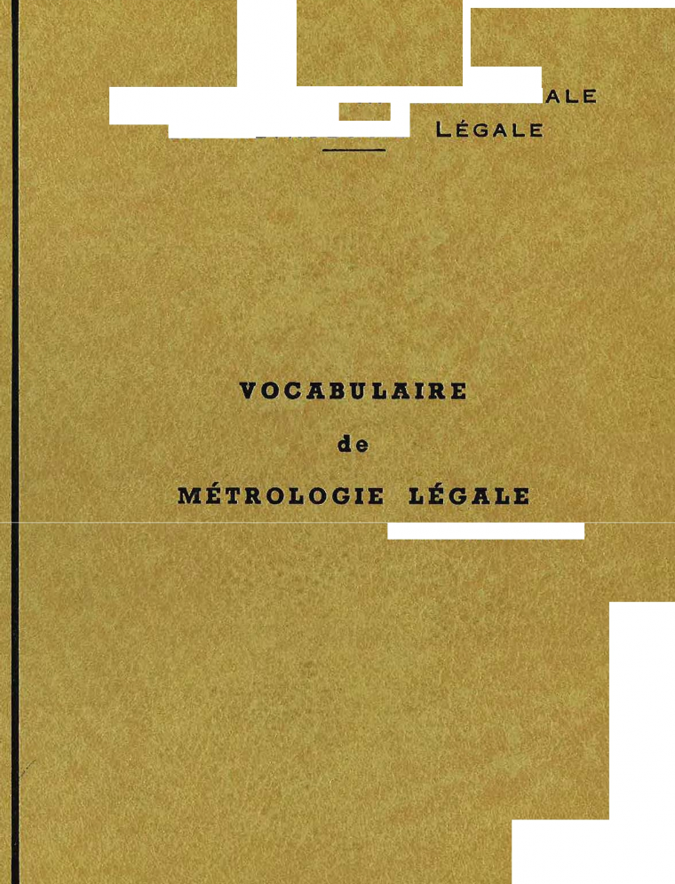
APPEL aux LECTEURS
Les langues sont en perpétuelle évolution et d'illustres Compagnies se sont depuis des siècles penchées sur la rédaction continue de dictionnaires, toujours en cours de modifications.
Le VOCABULAIRE DE METROLOGIE LEGALE n'échappera pas à ce destin inexorable et, bien que théoriquement conçu pour l' « éternité», il devra certainement subir l'épreuve du temps et recevoir de très importantes corrections et de très im-portantes améliorations.
Ces améliorations, les rédacteurs de l'ouvrage les attendent du « lecteur » qu'ils remercient vivement d'avance pour toutes ses observations, ses propositions et, surtout, ·ses critiques qu'ils souhaitent nombreuses.
La Rédaction
ORGANISATION INTERNATIONALE
DE MÉTROLOGIE LÉGALE
BUREAU INTERNATIONAL DE MÉTROLOGIE L�GALE
11 , R. U E.:._T U R. G O T - PA f\ 1 S IX• - F RA N C 6
VOCABULAIRE
de
MÉTROLOGIE LÉGALE
Termes fondamentaux
Secrétariat.rapporteur : POLOGNE
RECOMMANDATION INTERNATIONALE
TROISIEME CONFERENCE INTERNATIONALE de METROLOGIE LEGALE
Paris, 1968
Edition mars 1969
Reproduction interdite
CHAPITRE 0
MÉTROLOGIE
0,1. MtTROLOGIE
Domaine des connaissances relatives aux mesurages.
Remarques 1
Les principaux domaln11& de la métrologie concorn<lnt. :
llls unités de mesure et leurs étalons (lenr llte.blissemeot, reproduction, co!llleIVation et tranerolsslon), les mesurages (lcuri; méthodes, leur exécution, l'estimation de lelll' précision etc,),
les instruments de mesurnge (leurs proprî.étds examinées du point de vue de leur destination),
lea observateurs (leurs qunlltés se npportant à l'exécutlon des meauragll.!!, plll' ex. la lecture des lndJcatlons des lnstrument.s de me:iur.1go),
La métrologie embrasse tous les probltrnee aussi bien théoriques que pratl.que.s �e rapportant aux meE1ll'agea,
quelle que soit la précision de ceux-ci.
Selon la grandeur envisagée, la métrologie se dlviso en : rnét.J"ologle des longneurs, métrologie du temps, etc...
et, selon le domaine d'applicatlon, en métrologie Industrielle, métrologie tecbnlque, métrologie astronomique. métrologie médîcale, etc ...
Sont compl'lscs également dans la métrologie les déterminations des constantes physiques et des propdété1 des matériaux et des subet.ances.
D.l. M�TROLOGIE GtN�RALE
Partie de la métrologie qui traite des problèmes communs à toutes les questions mé-trologiques, indépendamment de la grandeur mesurée.
Exemples:
Les problèmes généraux théoriques et pratiques sur les unités de mesure (la etruclUTe d'un syrtème d'unitéa, le changement. des unités do meSl.lJ'e dans les formules pa:r ox.), les problèmes des orreure de mesurage, les problème1 cies qualités métrologiques des instruments de mesurage valables pou!' n'importe quelle grandeur.
0.3. Mt:TROLOGIE APPLIQUt:E
Partie de la Métrologie qui traite des me·suràges pour des applications définies.
Remarque:
Par opposition à la métrologie gênéraJe, la métrologie appliquée concerne les mesurages d'une œrtalne grandeur ou bien les mesurages des grll.Ildeurs faisunt partlo d'un certain domaine, selon les exemples donnés au point 0.1, remarque 3.
0.J.1, MIÊTROLOGIE TECHNIQUE
Partie de la Métrologie qui traite des problèmes des mesurages dans la technique.
Remorque:
Bien que d'autres domalnos soient compris dans la métrologie technique, cette expreaslon est souvent utilisée avec une signiflcailon incorrecte pour la seule métrologie des longueurs el des angles,
O.◄. M�TROLOGIE THÉORIQUE
Partie de la Métrologie qui traite des problèmes théoriques de mesurage.
Exemples:
A la m6trologie théorique appartiennent, entre autres, la thoorle des l:lra.ndcurs et des unités de mesure, la théorie des e1Teurs de mesurage, la. théorie ln(orma.tionnclle des mesurages.
O.S. TECHNIQUE DES MESURAGES
Partie de la Métrologie qui traite de la technique d'exécution des mesurages.
0,6. M�TROLOGIE LIÊGALE
Partie de la métrologie se rapportant aux unités de mesure, aux méthode� de mesu-irage et aux instruments de mesurage en ce qui concerne les exigences techniques et juridiques réglementées qui ont pour but d'assurer la garantie publique du point de vue de la sécurité et de la précision convenable des mesurages.
CHAPITRE 1
ORGANISMES ET SERVICES SE RAPPORTANT A LA MÉTROLOGIE LÉGALE
Préambule
A. La métrologie légale, dans chaque État moderne, est dirigée par un Organisme national qui, dans ce Vocabulaire, est appelé << Service national de métrologie légale" 1,.
La constitution de ce Service est souvent différente d'un pays à l'autre.
Toutefois, comme il est fréquemment nécessaire d'utiliser dans les Recommanda-tions de l'Organisation Internationale de Métrologie Légale des expressions qui s'y rap-portent et comme évidemment ces expressions doivent être uniformes, le Vocabulaire comprend dans le présent Chapitre une série de termes relatüs à un Service, fictif, mais ce-pendant assez proche des organismes existants.
Naturellement, certains des organes prévus dans ce Service fictif peuvent ne pas exister, en partie ou complètement, au sein des Services réels et inversement ces derniers peuvent en comporter davantage.
Le schéma ainsi présenté pourrait être éventuellement utilisé avec profit lors de la création de nouveaux Services.
B. L'organisation contemporaine de la métrologie comprend, en plus des Services nationaux de métrologie légale, nombre d'Organismes internationaux dont le but final est le maintien de l'uniformité des mesures dans le monde entier.
La métrologie légale est surtout intéressée par les deux Organisations ci-après :
ORGANrSATION INTERNATIONALE DES POIDS ET MESURES
instituée par la � Convention internationale du Mètre» - Paris, 1875, et comprenant :
a - la Conférence Générale des Poids et Mesures qui a pour buts :
d'élaborer et de provoquer les décisions nécessaires à la propagation et au perfeclionnement d'un système international d'unités et d'étalons de mesure:
de sanctionner les résultats de nouvelles déterminations métrologiques fonda-mentales et les diverses ré.solutions scientifiques de portée internationale concernant la métrologie.
-5-
2
b - le Comité International des Poids et Mesures
placé sous l'autorité de la Conférence Générale et qui a pour buts :
de diriger et de surveiller les travaux du Bureau International des Poids et Mesures;
d'instituer la coopération des laboratoires nationaux de métrologie pour l'exécution des travaux métrologiques que la Conférence Générale décide de faire exécuter en commun par les États membres de l'Organisation;
de diriger ces travaux et d'en coordonner les résultats;
de veiller à la conservation des f:talons internationaux.
c - le Bureau International des Poids et Mesures - B.I.P.M.
fonctionnant sous la surveillance du Comité International et qui a pour buts :
d'établir les étalons fondamentaux et les échelles des principales grandeurs physiques;
de conserver les Étalons prototypes internationaux;
d'effectuer les comparaisons des étalons nationaux tels que ceux de longueur, de masse, de température, d'électricité, de photométrie et des radiations ionisantes;
d'assurer la coordination des techniques de mesurages correspondantes;
d'exécuter et de coordonner les détermînations relatives aux constantes physiques fondamentales.
ORGANISATION INTERNATIONALE DE MÉTROLOGIE Ll�GALE - OIML
instituée par la « Convention internationale de Métrologie légale » - Paris, 1955 et qui a pour buts principaux :
de déterminer les principes généraux de la métrologie légale,
d'étudier dans un but d'unification les problèmes de caractère législatif et réglemen-taire de métrologie légale dont la solution est d'intérêt international,
d'établir un projet de loi et de règlement types sur les instruments de mesurage et leur utilisation,
d'élaborer un projet d'organisation matérielle d'un service type de vérification et de contrôle des instruments de mesurage,
de fixer les caractéristiques et les qualités nécessaires et suffisantes que doivent présenter les instruments de mesurage pour qu'ils soient approuvés par les États-membres et pour que leur emploi puisse être recommandé sur le plan international.
L'Organisation Internationale de Métrologie Légale comprend : la Conférence Internationale de Métrologie Légale,
le Comité International de 1\-:(étrologie Légale,
le Bureau International de Métrologie Légale - BIML.
1,1. SERVICE NATIONAL DE M�TROLOGIE L�GALE
Organisme national ayant pour but de résoudre les problèmes de métrologie légale dans un pays donné.
Remarque:
Les prlacipnles fonctions d'un Sorvlce national de métrologie légale consistent on g6néral à :
assurer la coruei-vatlon des étalons nationaux et garantlr leur pr6cisi.on par leur comparaison aux étalona internatioruunc, garantir et s'il y a lieu donner aux étalons seconditlre.s une précision convenable à leur emploi dana les pays par compnralson aux étalons nationaux;
effectuer des travaux ielontifi(Illes et tectmlque.s dans toua les domaines de la métrologie et des méthodes do mesurage, prendre part aux travaux des autres organismes nationaux intéressés à la métrologie;
élaborer les projets de lois se rapportant è. la métrologie légale ot promulger la réglementation corros-pondllllto;
réglementer et coruelllcr, surveiller et contrôler la fabrication et la i-éparatlon des instrwoenb de mosurage ;
contrôler l'utillsaLion de ces instrumenui et des opérat!oru de mesurage lorsque celte utilisation et cet opérations sont couvertes par la garanUo publique;
éventuellement, dêtector les rraudes do mesurage ou de débit de marchandises et déférer leur1_auteurs en
justice;
coordonner l'activité des Autorités de survellill.nce mêtrologlque qui, bien quo ne lui étant pas organique--ment assujetties, collaborent avec lui pour auUl'er le respect de la. réglementation de métrologie légale;
organiser l'enso.ignement de la métrologie légale;
représenter le pays dan5 les Instances internationales do métrologie légale.
1,1,1. BUREAU NATIONAL DE M�TROLOGIE Lif!GALE
Organisme directeur du Service national de métrologie légale.
1.1.l. INSTITUT NATIONAL DE M�TROLOGIE L�GALE
Organisme du Service national de métrologie légale chargé d'exécuter les travaux scientifiques et les recherches se rapportant à l'activité de ce Service.
BUREAU NATIONAL DE VtRIFICATION
Organisme du Service national de métrologie légale dont l'activité embrasse les objets énumérés aux points 1.1.4 à 1.1.7.
BUREAU R�GIONAL DE V�RIFICATION
Organisme du Service national de métrologie légale dont le but est :
d'assurer une précision convenable aux étalons des bureaux locaux de vérification, des bureaux de vérification ambulants et des centres de vérification sur un territoire déterminé,
de surveiller l'activité de ces bureaux, d'effectuer la surveillance métrologique sur ce territoire,
d'exécuter les vérifications de certains instruments de mesurage qui lui sont réservées.
1,1.5. BUREAU LOCAL DE VÉRIFICATION
Organisme du Service national de métrologie légale possédant un siège permanent et dont le but est de vérifier, dans une portion du territoire du bureau régional, certains instruments de mesurage déterminés et d'effectuer la surveillance métrologique dans un domaine de mesurage défini,
1.1.6. BUREAU DE V�RIFICATION AMBULANT
Organisme du Service national <le métrologie légale dont le but est de vérifier les instruments de mesurage appartenant à des catégories déterminées sur une portion du territoire de ce Service et d'effectuer une surveillance métrologique ambulante.
Il peut avoir un siège temporaire dans un bâtiment ou se trouver dans un véhicule spécial.
1,1,7. CENTRE DE VÉRIFICATION
Organisme du Service national de métrologie légale dont le but est de vérifier les instruments de mesurage dans un établissement défini qui fabrique, répare ou utilise des instruments de mesurage déterminés.
1.1. AGENTS DE VÉRIFICATION
Agents du Service national de métrologie légale habilités à exercer les fonctions de vérî fication.
L'ensemble de ces agents constitue un corps hiérarchisé.
1.3. AUTORITÉS DE SURVEILLANCE MÉTROLOGIQUE
Organismes nationaux indépendants du Service national de métrologie légale et col-laborant avec ce Service pour assurer le respect des prescriptions concernant la métrologie légale.
CHAPITRE 2
ACTIVITÉS DU SERVICE DE METROLOGIE LÉGALE
I\
l,t. CONTROLE DES INSTRUMENTS DE MESURAGE
Ensemble d'opérations comprenant:
l'essai de mode.les d'instruments de mesurage en vue de leur approbation,
la vérification ou l'étalonnage d'instruments de mesurage,
la surveillance métrologique.
2,2. ESSAI D'UN MODf:LE
Examen d'un ou de plusieurs instruments de mesurage d'un même modèle qui sont présentés par un fabricant au Service national de métrologie légale; cet examen comporte les essais nécessaires en vue de l'approbation du modèle.
1.2,1, APPROBATION D'UN MODt:LE
Décision prise par les Autorités compétentes de l'État, en général par le Service national de métrologie légale, reconnaissant que le modèle d'un instrument de mesurage répond aux exigences réglementaires.
2.2.2. APPROBATION D'UN MOD�LE A TITRE PROVISOIRE
Approbation, pour une durée limitée, d'un modèle d'instrument de mesurage afin de permettre des essais approfondis de longue durée sur un assez grand nombre d'înstruments conformes à ce modèle, mis en service dans les conditions usuelles d'emploi.
Remarque:
La décilllon d'approbaUon pent éventuellement fixer lo nombre d'lnstrlll!l1mts dont la coruitructlon est autorl�e,
lss lieux d'installation, les acce&soires de vtrlf:l.catlon dont ce.e instruments doivent être munis.
1.2,3. ADMISSION A LA V�RI FICATION
Décision prise par les Autorités compétentes de l'État, en général par le Service national de métrologie légale, d'admettre à la vérification des instruments de mesurage réglementés sans approbation de modèle.
EXAMEN D'UN INSTRUMENT DE MESURAGE
Ensemble des opérations effectuées en vue de contrôler que l'instrument de mesurage répond aux exigences des règlements sur la vérification ou aux recommandations d'une norme ou à des spéciôcations techniques....
EXAMEN DE CONFORMITt AVEC LE MOD�LE APPROUV�
Examen des instruments de mesurage en vue de s'assurer de leur confornùté avec leur modèle approuvé.
2.3.l, EXAMEN PR�ALABLE
Examen partiel de certains éléments séparés d'un instrument de mesurage ou bien d'un instrument entier dont la vérification définitive sera effectuée au lieu d'instal-lation.
2.l.3. EXAMEN ADMINISTRATIF EXTERNE
Ensemble d'opérations, autres que les opérations métrologiques, ayant pour but de contrôler que l'instrument de mesurage répond aux conditions réglementaires, en particulier en ce qui concerne les inscriptions, les dimensions, les emplacements de poinçonnage etc ...
2,l.4. EXAMEN MtTROLOGIQUE
Ensemble d'opérations ayant pour but de s'assurer que l'instrument de mesurage satisfait aux conditions réglementaires en ce qui concerne ses qualités métrologiques.
2.3,5. EXAMEN DE SURVEILLANCE
Examen d'un instrument de mesurage ayant pour but de s'assurer que la marque de poinçonnage est valable, que l'instrument n'a pas subi de transformation après la véri-fication, et que ses erreurs ne dépassent pas les valeurs maximales tolérées en service.
1,4. V�RIFICATION
Ensemble d'opérations efTectuées par un organîsme du Service national de métrologie légale (ou bien par un autre organisme légalement autorisé) ayant pour but de cons-tater et d'affirmer que l'instrument de mesurage satisfait entièrement aux exigences des règlernen ts sur la vérifica lion.
La vérification comprend l'examen et le poinçonnage.
2,4.1, V�RIFICATION PAR �CHANTILLONNAGE
Vérification d'un lot homogène d'instruments de mesurage ·en se basant sur le résul-tat de l'examen d'un ou de plusieurs exemplaires de ce lot.
l.4.2, V�RIFICATION PRIMITIVE
Vérification d'un instrument de mesurage neuf qui n'a pas encore été vérifié aupa-ravant.
2.4.3, V�RIFICATION ULT�RIEURE
Toute vérification d'un instrument de mesurage qui suit la vérification primitive : vérification périodique réglementaire,
vérification après réparation,
ou vérification avant l'expiration de la période de validité de la vérification périodique efîecttiée soit :
à la demande de l'usager,
parce que la marque de poinçonnage, pour n'.importe quelle cause, n'est plus valable pour le restant de cette période de validité.
2.4.4. V�RIFICATION COMPL�TE
Vérification ultérieure d'un instrument de mesurage pour laquelle on exige un examen complet de l'instrument, comme lors de la vérification primitive.
Remarque:
En général la vtrlflcatlon ap�s réparation de l'lnst:nunent est une vérification complète.
2.4.S. V�RIFICATION SIMPLIFl�E
Vérification ultérieure d'un instrument de mesurage pour laquelle on peut admettre un examen simplifié.
2,4.6. VtRI FICATION P�RIODIQUE
Vérification ultérieure d'un instrument de mesurage, effectuée périodiquement à des intervalles de temps et suivant des modalités fixées par les règlements.
2.4.7. VÉRIFICATION EXCEPTIONNELLE
Vérification d'un instrument de mesurage exécutée pour des raisons exceptionnelles.
2.4.B. Vt:RIFICATION OBLIGATOIRE
Vérification à effectuer pour que l'emploi de nnstruroent de mesurage ne soit pas interdit.
2.4.9. PR�SENTATION A LA VtRIFICATION (L'tTALONNAGE]
Ensemble des opérations administratives, matérielles, etc ... qu'effectue la personne qui présente un instrument de mesurage à la vérification [l'étalonnage]
1.4.10. REFUS D'UN INSTRUMENT DE MESURAGE
Décision d'un organisme du Service national de métrologie légale affirmant que l'ins-trument de mesurage ne répond pas aux exlgences réglementaires sur la vérification.
2.4.11. PERTE DE VALIDIT� DE LA V�RIFICATION
Abrogation de fait de la validité de la vérification d'un instrument de mesurage lorsque celui-ci ne répond plus aux exigences des règlements.
�TALONNAGE
Ensemble d'opérations ayant pour but de déterminer le.s valeurs des erreurs d'un ins-trument de mesurage (et éventuellement d'autres caractéristiques métrologique.s).
Remarque :
L'étolonnage peut être elîectuo on vue de permcttru l'emploi de l'instrument en tant qu'étalon,
1.5.1. EXPERTISE M�TROLOGIQUE
Ensemble d'opérations ayant pour but d'examiner et de certifier, par un organisme compétent, en général à des fins de témoignage, l'état dans lequel se trouve un instru-ment de mesurage et de déterminer ses qualités métrologiques du moment, entre autres, par rapport aux exigences des règlements qui le concernent.
-U-
SURVEILLANCE MITROLOGIQUE
Opération de contrôle que l'on exerce sur la fabrication, la mise en service et la ré-paration des instruments de mesurage ou encore sur leur utilisation pour s'assurer qu'ils sont utilisés correctement et loyalement.
Elle s'étend aussi au contrôle de la justesse des quantités indiquées sur les produîts préparés à l'avance.
POINÇONNAGE
Ensemble d'opérations ayant pour but l'apposition sur un instrument de mesurage de marques c.:onstatant que cet instrument répond aux prescriptions sur la vérification. Certaines de ces marques peuvent protéger certains éléments de l'instrument qui ont une influence sur ses propriétés métrologiques contre des modifications ou altéra-
tions effectuées après la vérification.
, OBLIT�RATION DE LA MARQUE DE V�RIFICATION
Annulation de la ou des marques de vérification lorsqu'il a été coustaté que l'instru-ment de mesurage ne répond plus aux exigences réglementaires.
2.8.1. AJUSTER
Amener un instrument de mesurage à un fonctionnement et à une justesse convena-bles pour son emploi.
2.8.2, CALIBRER
Fixer matériellement la position des repères (éventuellement de certains repères prin-cipaux seulement) d'un instrument de mesurage en fonction des valeurs correspondantes de la grandeur à mesurer.
2.8.3. GRADUER
Exécuter matériellement l'échelle d'un instrument de mesurage à partir de repères déjà détermînés (s'il y a lieu par interpolation entre des repères principaux).
-13-
3

CHAPITRE 3
DOCUMENTS ET MARQUES
DU SERVICE DE MÉTROLOGIE LEGALE
LOI RELATIVE A LA MITROLOGIE L�GALE
Loi ou, dans certains pays, décret ayant pour objet de fixer les unités légales de mesure, d'instituer et organiser le Service national de métrologie légale ainsi que de rendre obligatoire le contrôle des instruments de mesurage.
PRESCRIPTIONS RELATIVES A LA VERIFICATION D'INSTRUMENTS DE MESURAGE ASSUJETTIS A L'APPROBATION DE MOD�LE [DISPENSES D'APPROBATION DE MODtLE]
Prescriptions réglementaires fixant les conditions de la vérification d:instruments de mesurage appartenant à une catégorie pour laquelle l'approbation de modèle est obligatoire [à une catégorie pour laquelle il n'est pas exigé d'approbation de modèle].
J.1,2. PRESCRIPTIONS RELATIVES A L'APPROBATION DES MOD�LES D'INSTRU-MENTS DE MESURAGE
Prescriptions réglementaires fixant les conditions d'approbation des modèles pour une certaine catégorie d'instruments de mesurage.
3.1.J. SPÉCIFICATION DES INSTRUMENTS DE MESURAGE ASSUJETTIS A LA VtRIFICATION
Document officiel déterminant les catégories d'instruments de mesurage qui doivent être soumis à la vérification.
3,1.4. INSTRUCTION RELATIVE A LA VÉRIFICATION DE CERTAINS INSTRU-MENTS Dl: MESURAGE
Instruction se rapportant à la méthode imposée pour vérifier certains instruments de mesurage.
MARQUES D'UN INSTRUMENT DE MESURAGE
Signes portés par un instrument de mesurage permettant de le reconnaître ou témoi-gnant de certains de ses traits caractéristiques ou de sa qualité.
Exemple:
Marque de fabrique, marque de vérlflcation,
MARQUE DE V�RI FICATION
Signe apposé sur un instrument de mesurage, soit pour certifier qu'il a satisfait aux épreuves de la vérification, soit pour empêcher que certains des organes qui le com-posent soient enlevés, déplacés, modifiés ou altérés.
3.l.l. MARQUE PRINCIPALE DE VtRIFICATION
Marque certifiant qu'un instrument de mesurage a satisfait aux épreuves de la véri-fication.
3.2.3 MARQUE DU BUREAU
Partie de la marque de vérification identifiant le bureau qui a effectué cette véri-fication.
J.2.4. MARQUE ANNUELLE
Signe indiquant l'année au cours de laquelle la vérification a été effectuée.
3.2,S, MARQUE DE REFUS
Marque indiquant que l'instrument de mesurage ne répond pas aux conditions ré-glementaires de vérification.
Remarque:
Cette marque est aussi utilisée pour obUUrer les marques de vérifications exîstrmt sur l'instrument refusé.
3.2.6. MARQUES DE PROTECTION
Ensemble des marques dont la destruction ou la détérioration suggère que certains des organes composant un instrument de mesurage ont pu être enlevés, déplacés, modi-fiés ou altérés.
Ces marques sont aussi appelées marques de scellement.
3.l.7. MARQUE D'APPROBATION DE MODf:LE
Marque fixée par la décision d'approbation d'un modèle et apposée sur chaque ins-trument conforme à ce modèle pour certifier cette conformité.
3,3. POINÇON
Outil portant, en creux ou en relief, la matrice d'une des marques ci-avant et ser-vant à apposer cette marque.
3.J.1. CERTIFICAT DE V�RIFICATION
Document certifiant que la vérification d'un instrument de mesurage a été effectuée.
Remarque:
Dam, le cert1ftcat de vérification peuvent être rappoléea les prescriptions et les inrtruc:Uons fur.ant les condltlons do celte vêrUlcation. Peuvent auul y etre indiqués los résultats obtenus ot la durée de ve.lidlt6 du document ain1l 6t.abli.
l.3.2, CERTIFICAT D't:TALON MAGE [ D'EXPERTISE]
Document certifiant que l'étalonnage [l'expertise métrologique] d'un instrument de mesurage a été effectué et indiquant les résultats obtenus lors de cette opération.
l.4. INSCRIPTIONS D'IDENTIFICATION D'UN INSTRUMENT DE MESURAGE
Ensemble de mots, de lettres, de chiffres, de signes portés par l'instrument de mesurage indiquant l'origine, la destination de celui-ci, son fonctionnement, ses traits caractéristi-ques, son mode d'utilisation etc,..
Exemples z
Bascule à éC[llllibre automatique ... Marque de fabrique : AB5
Portéa ma"Xlmale : 15 kg - Portée min.lmale : 100 g
$chelon � 5 S
CompteUl" d'énergie électrique ... Marque de f11brique : C2
Monophaaé 2 fils
.!20 V - 5 A'· 50 Jiz - 650 t{k.Wb
Slgne de modèle :.. _., - Année do fabrication :.1968

CHAPITRE 4
GRANDEURS ET UNITÉS DE MESURE
GRANDEUR (MESURABLE)
Attribut d'un phénomène ou d'un corps qui est susceptible d'être distinguée quali-tativement et déterminée quantitativement.
Remarques:
Lo terme • grandeur ,, signifie auul bien une grandeur avec le sens général qu'une grandeur dMenntnée.
Si a.ucune conf115ion n'est à craindre, on peut omettre l'expression , mesurable ,.
Exemples:
grandeurs dans un sens général :
longueur, temps, masso, température, dureté, résistance é.leclrlquc
gr!l!l.deurs, da.nl! un sena déterminé :
longueur d'une tige, résistance électrique d'un fil
4.t.1. GRANDEUR A MESURER
Grandeur assujettie à un mesurage.
4.1.2. GRANDEUR D'INFLUENCE
Grandeur qui ne fait pas l'objet du mesurage mais qui influe sur la valeur de la gran-deur à mesurer ou sur les indications de l'instrument mesureur ou sur la valeur de la mesure matérialisée reproduisant la grandeur.
Remarque:
La grandeur d'inlluence peut provenir de l'ronbio.nce ou de l'instrument de meslll'age lui-même,
VALEUR D'UNE GRANDEUR D�TERMIN�E
Grandeur exprimée par le produit d'un nombre par l'unité de mesure.
Exemples:
5 m ... 12 kg ... 20° C
,1. VALEUR VRAIE D'UNE GRANDEUR
Valeur qui caractérise une grandeur parfaitement définie dans les conditions qui existent au moment où cette valeur est examinée.
Remarque:
La valeur Vl'aie d'une grandeur est une notion îdéaJe et en génêral elle ne peul pas être connue,
On peut cependant dire que la valeur vraie du Kllogro.uune étalon prototype international déposé au Bureau Internatiorutl des Poids et Mesures est, par définition el dans des conditions déterrnlnées, de 1 kg.
Exemple 1
La longueur vraie d'une règle en m6uiJ est la longueur qui est déterminée par la distance entre le.s deux pluns des extrémités de la règle, suppos6s parfaitement parallèles et perpendiculaires à l'axe de colle-ci, louque toutes les grandew-s d'influence ainsi que les condJUons opêratoires sont parlaitllment définies.
4.2.1.1, VALEUR CONVENTIONNELLEMENT VRAIE D'UNE GRANDEUR
Valeur approchée de Ia valeur vraie d'une grandeur tel1e que, pour la fin à laquelle cette valeur est employée, la différence entre ces deux valeurs peut être négligée,
Remarque:
On détermine géuoralemcnt la valeur conventionnellement vruie do le b'I'Qndeur au moyen de méthodes et à
l'aide d'instruments d'une préciaion convenable pour chaque cas partîculler.
Exemple:
lorsque un compteur d'énergie éledrique, dont les erreurs ronx.lmales tolérées sont égales à ± 2 %, est vérifié à
l'aide d'un compteur-étalon dont l'erreur d'indication ne dépasse pas ± 1 %, le compteur-étalon indiquera de&
yaleurs conventionnollemcnt vraies de l'énergie électrique pour les buts de la vérification;
lorsque à son tour le compteur-étalon sera lui-même vérifié à l'aide d'un wattrnêtre--étnlon el d'un chronomètre, les valeurs obtenues représenteront aussi des valeurs conventionnellement vraies pour les buts de cette autre vé-rification.
.l. VALEUR NUM�RIQUE D'UNE GRANDEUR
Nombre pur dans l'expression d'une valeur de la grandeur déterminé�.
Exemple:
Lu nombre& 5, 12, 20 dans les exemples du point 4.2.
SYST�ME DE GRANDEURS
Ensemble qui comprend un groupe donné de grandeurs de base et de grandeurs dé-rivées correspondantes et qui embrasse tous les domaines de la science ou bien l'un de ses domaines seulement.
Remarques:
Comme dtnomll'latlon abrégée d'un syrtème de grandeurs dtflnl, on utilise les symboles de l'ensemble de 1ea grandeurs da base.
A chaque système de grandeurs on peul rattacher un nombre quelconque de systèmes d'unités.
Exemples:
système da grandeurs de la mêcanlqu6 ; l, m, l
ayst.èma de grandeurs de la mêcanlque et de t'êlect.ricité : 1, m, t, 1
GRANDEUR DE BASE
Dénomination des grandeurs qui, dans un systeme de grandeurs, sont admises comme étant indépendantes les unes des autres et au moyen desquelles les grandeurs qui en dé-rivent dans ce système peuvent être exprimées par des équations de défirùtion.
Remarque:
Cette dt!finltlon na préjuge pas le nombre des gr11I1deur1 que l'on peut admeltr6 comme lndêpendo.ntes,
Elle ne répond pas non plua à la question de aavoir Bi l'on pellt. admettre une grandeur donnée comme grandeur de baao lorsque cerui.lnaa autres wandeura ont déjà Ht choisies cotnme telles car, &I 011 a déjà accepté par exemple les grandeurs de base longueur et temps, il n'est plus possible d'accepter la vitesse linéaire comma grandeur lndé• pendante.
Exemple:
Dans le domaine de� gTs.ndeurs mécaniques, on accepte généralexnent comme grandeurs de base: la longueur, la maue et le temps et on y ajoute en plu� la tempâralure pour le domaine des grandeurs thermiques.
4,3,2. GRANDEUR DlRIVll!E
Grandeur définie dans un système de grandeurs comme étant une fonction des gran• deurs de base de ce système.
Exemples
La force F, déf\n.ie dans le ayiitùms de grandeurs 1, m, t pa.r l'équation F = m . d'l
dfi
L'lnten&ité du cliamp magnétique H à une dlstBJ1ce r d'un conducteur recttllgne p&l'couru par un conrant J,
dans le système rationalisé des grandeurs l, m, t, 1, définie pnr l'équation H = 1/2 rrr.
-21-
4
,J, DIMENSION D'UNE GRANDEUR
Expression qui représente une grandeur d'un système comme un produit de puissances des grandeurs de base de ce système, avec un coefficient numérique égal à 1.
Remorques :
Les exposants dans la dlmension d'ono gTandeur sont appelés , exposants de dimensions ,,
'..!. Poar faire La distinclion entre le symbole d'une grandeur et le symbole de sa dimension, on utlllsc dans l'lm-prenlon les caractères italiques pour le premier cas et les romains (caplhle.s) pour le deuxième.
Exemples :
L�tT-2 = dimension de la force dans le système des grandeurs 1, m, /.
J.312Mll21'-2µt 12 = dimension de la tension électrique dans le système de grandeurs 1, m, l, µ
I)!MT-31-1 = dimension de la même tension électrique dans le système de grandeurs 1, m, t, I.
4,3A. GRANDEUR SANS DIMENSION
Grandeur qui ne dépend d'aucune des grandeurs de base du système donné de gran-deurs.
Remarque:
Une grandeur sans dimension s'exprime par le produit des puissances zéro des grandeurs de base du syirtèn,e; elle dîCièrc poru-lant d'un nombre pur car cDe a le caractère et les qualités d'une grandeur.
Exemple:
Dans le syrtème de grandeurs /, m, 1, l'angle, qui s'exprime pnr L• M• T•, est une grandeur sans dlntensloo.
�QUATION ENTRE GRANDEURS
Équation dans laquelle les symboles littéraux reprèsentent des grandeurs.
Remarque:
L'équutlon ontre grandeurs est valable indépendamment des unités de memre et ne nécesslto pas l'utilisation d'unités déterminées à. l'avanco.
Exemples:
1 - P.l-équation entre grandeurs du chemin l parcouru dans un temps t p11r un mobile animé d'un mouvement uniforme avec 111 vitesse P,
2
S = b.h -
équati•on ent rc grandeurs do l'ai•re S d'on
tri angle dont un côté
est b et la hauteur corr!!ipondante li.
�QUATION ENTRE VALEURS MUM�RIQUES
Équation dans laquelle les symboles littéraux représentent des valeurs numériques correspondant aux unités de mesure utilisées.
Remarques:
L'éqnat!on entre valeun numériques, pour los unîtés d'un système cohérent d'unités de me.sure, peut Mro consldértle aussi comme une équation entre grandeurs.
Pour l:11.otinor des malentendus, Il serait désirable ù'uUllser dans les équation, entre valeurs numérique• de11 symboles dlftérents de ceux utilisés dans les équations entre grondeurs.
Exemples:
1T
1. uro/a =
60
dm Wt/rn est une équation entre valeurs numériques pour la vitesse linéaire. D d'un point situé
aur un cercle de diamètre d tournant autour de son centre avec la vitasae angulaire ro valable pour les unités anl, vo.ntes v en mètre par seconde, d en mètre, co en tonr par m1nute.
2. On peut présenter l'équation cl-dessus auast sous la forme où { P} est la valeur numérique de v pour l'nnité m/s
{ d} est la valeur numérique de d pour l' unitA rn
{ w} est la valeur numérique de m pour l'unité tjrnin
{11} = ..2:. {d} {ro}
60
�QUATION ENTRE UNITtS DE MESURE
Équation dans laquelle les symboles littéraux représentent des unités de mesure. Cette équation a pour objet :
soit de définir les unités de mesure des grandeurs dérivées, dans un certain système d'unités de mesure, à partit des urùtés des grandeurs de base ou des unités d'autres grandeurs dérivées de ce système,
soit d'établir la relation entre l'unité de mesure d'une grandeur et ses multiples ou sous-multiples,
soit de donner l'équivalence entre les unités de mesure d'une même grandeur dans des systèmes différents d'unités.
Exemples:
1 cm = 0,01 m ; 1m !.I = 1 m. 1 m; 1W=1V.1A
t kp = 1 kg . 9,80665 mf�' � !l,80665 N.
1m/s = -lm
1 s
Généralement: l'équation entre unités de mesure de l'UDitê [xn+tJ e,cptimée par les nnit..t!s [xt} [:0] ... [:z:,.)
tlllt 111. suivan te :
[ Zn + 1] = I< [xl)0'.1 [ x2]<X2. , .. (x,.]O:n
où a1, a2 . . . a,, et K sont des valeorii numériques.
4.5, �CHELLE (DE REP�RAGE) D'UNE GRANDEUR
Ensemble de valeurs d'une grandeur, déterminées suivant des prescriptions et admi-ses par convention.
Exemples:
Échelle internationale pratique des tempé.ratures basé.e sur lei; températures fixes de fu.slon ou d'ébullition d'une série de corps purs dé.terrninéll et sur l'utilisation d'instruments de ro�urage et de formules d'interpolation définis.
Échelle de dureté. de Mohs, basée sur les duretês d'une série de mlnorau,c déterminés.
4,6. UNITé DE MESURE
Valeur d'une grandeur admise conventionnellement comme ayant une valeur numé-rique égale à 1.
Remarque:
On fixe l'unité de mesure d'une grandeur pour rendre pou\ble la comparaison quantitative, enlre elles, des
dtfJérenles valeurs de celle même grandeur .
-4.6.1. SYMBOLE DE L'UNIT� DE MESURE
Signe co_nvcntionnel désignant l'unité de mesure.
Exemples:
:ru. : Bymbolc du mètre;
A : symbole do l'ampère;
0 : aymbole du deg:ri angulaire.
4.6.2, UNITt DE MESURE L�GALE
Unité de mesure dont l'utilisation est imposée ou admise par un règlement d'État.
4.6.3. UNITÉ DE MESURE DE BASE
Unité de mesure d'une des grandeurs de base.
Remarque:
Des unités de mesw:e de base découlent los unltés de mesure dérivées d'un système d'unités de mesure.
Exemple:
Le mèl:ro est l'unité de baae de la grandeur do bll.Se , longueur • dans le Système International d'Unités.
Du mètre (conjolntcmeot avec d'autres uniUs de mesure de base) découlent lu unités dérivées de ce système: unitta de vites.iie, de 1orce, de potentiel électrique....
4,6A. UNITÉ DE MESURE DtRIV�E
Unité de mesure d'une grandeur dérivée.
Remarque:
Pour quelquos unités dérivées, il ex.lste des noms et des symboles spéciaux, par oxemple: newton (N), Joule (J),
volt (V), coIJUllo unités SI do force, d'énergie, de potentiel électrique
Souvent il sern avantageux de ne pas exprimer les unltéll dérivées au moyen des ullit-Os de base mala au moyen d'nutres unités dérivées.
Exemples :
Dans le Synème International d'Unit6s (SI) :
rn . s-1 = unité de -vltel!ge llnêalre,
1 Wb = 1 m2 . kg . s-2 . A-1 = unlt6 de fllIX me.gnetique, mais cette unité peut aussi être exprimée pe.r deux autres unités dérlvées C. n plll' exemplo,
4.6.S. UNITt DE MESURE COHt:RENTE
Unité de mesure qui s'exprime au moyen des unités de base par une formule dont le coefficient numérique est égal à 1.
Remarques:
L'expre5&lon " unité ùe mesure cohérente • e.rt une abréviation d'une dénomination plu& précise • unité de mesure dans un syiitème cohérent • car, pour une unité lsolée, la notion de cohérence n'a 6vidomment pas da sen•.
Cette notion s'applique seulement nux: unités de mesure dérlvées.
Exemple:
Le newton est l'unité dilrlvée e-0herente de la force dans le Système International (SI) : 1 N = 1 m. kg . 1·2
UNITI: DE MESURE HORS-SYSTtME
Unité de mesure qui n'appartient pe.s au système d'unités de mesure envisagé.
Exemple:
La calorte, égale à 4,1868 joules, est une onlté hor&--système de la quantit.6 de chaleur (tro.ve.11) dans les systènlea d'unités de niesure basé, sur le mètre, le kllogram.me el la seconde.
UNIT·t DE MESURE MULTIPLE [SOUS-MULTIPLE]
Unité de mesure qui est un multiple [sous multiple] de l'unité et qui est formée selon le principe d'échelonnement admis pour l'unité correspondante.
Exemples:
L'une des unités mulUples décimales du mètre C-!t le kilomètre (km) et l'une de.t unités &ous-multiples dl.cl-rnales e3t le millimètre (mm).
Une des unités muJUp\es non décimales de 111 see-0nde est l'heure,
SYSTt:ME D'UNIT�S DE MESURE
Un ensemble d'unités de base et d'unités dérivées relatü à un certain système de grandeurs.
Exemple:
Sya�rne d'unités CGS, Système d'unités MKSA, Système International d'Unltês /SI),
SYST�ME COH�RENT D'UNITlS DE MESURE
Système d'unités de mesure composé d'un ensemble d'unités de base et d'unités dérivées cohérentes.
Remarque:
Dan.a le œs d'unités appartenant à un système cohérent, le& équations entre vnleur� numériques ont la tonne dea équations entre grandeurs.
Exemple:
Les unités suîvnnleB: m, kg, s, rn2, m3, Hz= s-t, m. s-1, m. s-2, n,.-3. kg, N =m. kg. 1-a, m-J . kg . a-2, J = m2 . kg . s-2, W = ro2 . kg . s-a représentent un ensemble cohérent d'unités de mesura de la mêoanlque appartenant au Syatème International d'Unités (SI).
4.7.l. SYST�ME M�TRIQUE D�CIMAL
Système d'unités de mesure basé sur les prototypes du mètre et du kilogramme ainsi que sur la division décimale.
4.7,J. SYST�ME INTERNATIONAL D'UNIT�S (SI)
Système cohérent d'unités de mesure fondé sur les six unités de base suivantes : le mètre, unité de longueur
le kilogramme, unité de masse
la seconde, unité de temps
l'ampère, unité d'intensité du courant électrique le kelvin, unité de température th�rmodynamique la candela, unité d'intensité lumineuse
adopté et recommandé par la Conférence Générale des Poids et Mesures.
CHAPITRE 5
MESURAGES
PR�AMBULE
Le mot u mesure » a, dans la langue française courante, de très nombreuses signi-fications.
En métrologie il a, parmi d'autres et suivant les cas, le sens :
d'une valeur (la mesure d'une distance est de 500 mètres) d'un résultat (mesure approchée à x % prés)
d'une action (cours de mesures électriques) d'un instrument (mesure de capacité),
Aussi, dans les cas ci-dessus, ont été utilisés les termes suivants : valeur d'une gran-deur - résultat de mesurage - mesurage - mesure matérialisée.
Lorsqu'il a paru nécessaire de conserver cependant le terme <• mesure », celui-ci n'a jamais été employé seul, par exemple : unités de mesure - mesures matérialisées - appareils de mesure.
Toutefois, lorsqu'aucune confusion ni ambiguïté n'est possible, on peut, dans un es-prit de simplification, appeler « mesure » l'expression cc résultat d'un mesurage».
5.1, MESURAGE
Ensemble d'opérations expérimentales ayant pour but de déterminer la valeur d'une grandeur (4.2).
5.1,1, PRINCIPE DE MESURAGE
Phénomène physique qui est la base du mesurage.
Exemples:
effet thermoéleclriquo appliqué dans le mesurage do la température, équilibre des couples de torcos dans les balanco.s à bras égau,:, chuta de pression ut.msoo pour le mesurage du dêblt.
5.1.2. PROCESSUS DE MESURAGE
Succession des opérations nécessaires à l'exécution d'un mesurage.
Remarque:
Le.s opcrations de mesurage comprennent nussî, s'il y a lieu, les calculs nécessaires pour déterminer la valeur de la iirandeur mesurée.
-Zl-
5.l. METHODE DE MESURAGE
Mode de comparaison utilisé dans le mesurage.
Exemples:
méthode lle mesurage fondamental, méthode de mesurage par comparaison, méthode de mesurage par zéro,
Si1. M�THODE DE MESURAGE DIRECT
Méthodé de mesurage par laquelle la valeur d'une grandeur à mesurer est obtenue directement sans qu'il soit nécessaire d'exécuter des calculs supplémentaires basés sur une dépendance fonctionnelle de la grandeur à mesurer par rapport à d'autres gran-deurs réellement mesurées.
Remarques:
On considère que la valeur mesurée est obtenue dîrectement même lorsque l'échelle d'un instrwnent de me-&1ITage comporte des valeurs conventionnelles qui sont rel!ées aux valeurs correspondantes do la grandeur mesurée è. l'aide d'un tableau on d'un graphique.
La méthode de mesurage roste di.rtlcto même s'il est nécessaire d'exécuter des mesurages supplémentalre1 pour déterminer les valeurs dea grandeurs d'infiuence (4.1.2) en vue d'effectuer les corrections correspondante,.
Exemples:
mesurage:
d'une mas!e sur une balance à cadr.nn ou sur une bQJ.ance à bras égaux, d'une longueur à l'aide d'une règle à traits ou d'une règle à bouts.
S.2.1.. M�THODE DE MESURAGE INDIRECT
Méthode de mesurage dans laquelle la valeur d'une grandeur est obtenue à partir de mesurages effectués par des méthodes de mesurage direct d'autres grandeurs liées à la grandeur à mesurer par une relation connue.
Exemples:
mesurage·de la :masse volumique d'un corps en se basant sur lu mesura.ses de sa masse et de ses dimensions géométriques,
mesurage do la résistivité d'un conducteu:r en se basant lillI' les mesurages de sa ré&stance, de sa longueur et de la surfa.ce de sa section.
5.2.3. M{THODE DE MESURAGE COMBINATOIRE EN St:RIES FERM�ES
Méthode de mesurage consistant à déterminer les valeurs d'un certain nombre de grandeurs à mesurer d'après les résultats de mesurages directs ou indirects de diverses combinaisons de ces valeurs et en résolvant le système d'équations correspondantes.
Exemple:
mesUiages do la. masse de l'.hacun des poids particullcrs d'une série de poids, quand 111. masse de l'un d'eux e1t connue et quand sont connus leli résultats des «1mparahons entre elles des masses dea dillércntea combînal10n1 ponlbles dea pouls.
S,2.4. M{THODE DE MESURAGE FONDAMENTAL
Méthode de mesurage basée sur les mesurages des grandeurs de hase entrant dans la définition de la grandeur.
Remarque:
Cette môthode est parfois appelée , méthode de mesurage absolu ,.
Exemples:
mesurago de la pression à l'aJde d'un manomètre à piston b8l!é sur la défutltion de la pression comme étant lo rapport entre la forco et la surface sur laquelle cette force agit,
m�urage de l'acc6lération de la pesanteur basé sur le chemin parcouru pendant un certain temps par un corp1 qul tombe en cbute libre,
mesurage de la pression à l'aide d'un manomètre ô. tube en U avec lequel la pression se déduit tout d'abord de mesur&,ges de mas11e volumique, d'accélération de la pesanteur et de longueur, rumen� à leur tour à des mesu,-rages de grlllldeurs de base : longueur, m1W1e, tempa.
5,2,5. Mt:THODE DE MESURAGE PAR COMPARAISON
Méthoqe de mesurage basée sur la comparaison de la valeur d'une grandeur à mesu-rer à une valeur connue de la même grandeur ou à une valeur connue d'une autre gran-deur fonction de la grandeur à mesurer.
Remarques:
1, Un mesurage par comp11ralson est donc, d'après la définition, aussi bien le masurage du volume d'un liquide au moyen d'une mesure matérialisée de capacité que le meSUl'age d'une pression au moyen d'un manomètre à ressort dans lequel la prewon se transforme en une d�formutîon d'un élément élastique,
2, Cependant, on considcre parfois que c'est seulement dans le cas où la companùson a'elTectue entre deux grandeurs de même nature que la métl:todo est dite • par comparaison ,.
-29-
s
MtTHODE DE MESURAGE PAR COMPARAISON DIRECTE
Méthode de mesurage par comparaison où toute la valeur de la grandeur à mesurer est comparée à une valeur connue de la même grandeur reproduite par une mesure ma-térialisée qui entre directement dans le mesurage.
Exemples:
me.sura�e d'une longueur à l'aide d'une règle graduée,
mesurage du volum!l d'un Uquldo au moylln d'une mesure matérialisée de capacité,
rnesurage d'une masse au moyen d'une balance équilibnmt la maue à mesurer du C-Orps conaldêré par fa masae
correspondante d'une sommo de poids PlJU'qués.
5,2.5.1.1. M�THODE DE MESURAGE PAR SUBSTITUTION
Méthode de mesurage par comparaison directe dans laquelle la valeur d'une grandeur à mesurer est remplacée par une valeur connue de la même grandeur, choisie de telle ma-nière que les efîets provoqués sur le dispositü indicateur par ces deux valeurs soient les mêmes.
Exemple:
Détermination d'une muse, au moyen d'une balance et de poids marqués, par la rnéthodo de substitution de Borda.
5,2.5.1.1. M�THODE DE MESURAGE PAR TRANSPOSITION
Méthode de mesurage par comparaîson directe dans laquelle la va1eur de la grandeur mesurée est d'abord équilibrée par une première valeur connue A de la même grandeur, puis la valeur de la grandeur mesurée est mise à la place de cette valeur connue et de nouveau équilibrée par une autre valeur connue B. Si la positîon de l'organe indiquant l'équilibre est la même dans 1es deux cas, la valeur de la grandeur mesurée est égale à yA]3.
Exemple:
Détermln11tion d'une masse, au moyen d'une balanco et de poiùs marqués, par la méthode de "double pesée de Gauss,.
MtTHODE DE MESURAGE Dl FF�RENTIEL
Méthode de mesurage par comparaison, basée sur la comparaison de la grandeur à mesurer à une grandeur de même espèce de valeur connue peu différente de celle de la grandeur à mesurer, et le mesurage de la différence des valeurs de ces deux grandeurs.
Exemples:
comparaison de deux longueun1 au moyen d'un comparateur,
comparaison de deux tensions électriquei; Ru moyen d'un voltmètre dlftérent!cl.
M�THODE DE MESURAGE PAR Z�RO
Méthode de mesurage différentiel où la d.iITérence entre la valeur de la grandeur à
mesurer et la valeur connue de la même grandeur qui lui est comparée est amenée à zéro.
Remarque:
La grandeur à mesurer peut être remplacée par une g:r1mdeur d'une o.utre espèce qui, ello, est comparée à une grandeur de la même espèce.
Exemples:
détermination d'nnc masse lorsque la position ftnnle d'équilibre de la bll.lance est la même que la poslllon Initie.le,
détermination d'une tension électrique au moyen d'un compensateur, mesurnge d'une rês!stAoce êleclrlque avec un pont de Whcatslone et un Indicateur de zéro.
5.2.5.2.l. M�THODE DE MESURAGE PAR COÏNCIDENCE
Méthode de mesurage difîérentiel où une différence très faible entre la valeur de la grandeur à mesurer et la valeur connue de 1a grandeur de même espèce qui lui est com-parée est déterminée par une observation de 1a coïncidence de certains repères ou signaux.
Exemples:
mesurage du temps par la coïncldence de �Ignaux hor:rlres ot des indlcations d'une horloge, mesurage de la longueur d'un objet à l'aide d'un pied à coulisse à vernier,
5.2.S.J. M�THODE DE MESURAGE PAR D�VIATION
Méthode de mesurage par comparaison dans laquelle la valeur de la grandeur mesurée est déterminée par la déviation d'un dispositif indicateur.
Exemples:
mc.:,urage de la prel>Slon au moyen d'un m!lllomètre à. aiguille,
Dle$urago d'une tension 6lectrique RU moyen d'un voltmètre à spot lunrlneux, mesurage d'une masse au moyen d'une balanco à. équilibre e.utomatiqu11.
INDICATION D"UN INSTRUMENT DE MESURAGE
Valeur de la grandeur mesurée indiquée par l'instrument de mesurage.
Remarques:
1, La notton d'indlcaUon d'un in.rtrument do mesurage Be rapporte o.ussl aux mesure• matêrlallsée1 oonirne par
n:. les poids, les meslll'Cs matêriallsée8 de capacltê etc... ;
dans ces caa, l'lndic.atlon équivaut à la valeur nominale de la mesure matérlalial:e ou blen à 11.8. dénomination.
2. En tant qu'• indication•• on entend a=i une indication préaumée, obtenue par interpolation de la position de l'index de l'instrument entre des repères '\'olslns.
S. La valeur de la grandeur mesurée peut être lndlquée directement en unités de mesU.I'e de cette grandeur ou en certain� unitês conventionnelles. Dans ce cas, l'indication directe doit l\tre multipliée par ln constant11 de l'instrument.
5.3,1, CONSTANTE D'UN INSTRUMENT DE MESURAGE
Facteur par lequel on doit multiplier l'indication de l'instrument pour obtenir le résultat du mesurage.
Remarques a
La constante d'un !Illltrument qui Indique directement la valeur de la grandeur me.1mrée est ésale à 1.
2, Lorsque l'échelle d'un lmrtrument n'indique pas une unité détermlnéB ou bien si elle indique des unltés de mesure aut:ros que celle relative à la grandeur mesW"ée, la constante est un nombre concret,
lnr&que l'échelle est exprtm6fi en unltês de la grandeur mesw-éc, la constante est un nombro abstrait.
3. Le.a inrtruments è étendue• multiples mals à échelle unique ont plnsl.eura constantes qui correspondent, par uemple, aux dllYérentes pointions d'un commutateur.
5,3.2. OBSERVATION (DE L'INDICATION)
Opération consistant à capter l'indication de l'instrument de mesurage.
Remarque:
La , lectur,e de l'îndica.tlon n'est qu"une e�pèco d'observation parmi tou9 lea genrem d'observations -la r�cep-
tton d'u.n s!snal acousUq_ue en représente une autre espèce.
5,3,3, VALEUR NOMINALE TOTALE D'UNE MESURE MAT�RIALIS�E
Valeur totale de la grandeur reproduite par la mesure matérialisée et qui est indiquée sur cette mesure.
Remarques :
Vo!.J' point 5.3 rornarque 1.
Co terme a'appllquo aux mesures matérlalaéll-5 à. phaieura valeurs dlstlnete1 alnai qu'aux mesures matérla-lllllos graduéea (8.1.1 exemples b et c de la rarnarque 4).
Exemple r
Dans une llp_rouwlte graduée de capo.cité lotalo 100 cms, le volume déllmtlé par le traJt de 100 am9 reprélentia la valeur nollllnalo totale do l'ép:rouvctte.
5.3A. VALEUR NOMINALE PARTIELLE o•UNE MESURE MATiRIALIS�E
Valeur de la grandeur partielle reproduite par la mesure matérialisée et indiquée sur cette mesure.
Remarque:
Mtrnes remarques qu'au potnt 5.3.3.
Exemple:
Dans wi.e éprouvette graduée de 100 cm3, chaque volume déllmJté par un tralt quelconque, autre que le trait 100, représente un vo\Ullle nominal partiel de 1'6prouvatta.
5.3.5. VALEUR CONVENTIONNELLEMENT VRAIE o•UNE MESURE MAT�RIALISl!l!E
Valeur de la grandeur reproduite par la mesure matérialisée déterminée par un me-surage efîectué à l'aide d'instruments de mesurage présentant une erreur globale pra-tiquement négligeable.
R�SULTAT D'UN MESURAGE
Valeur de la grandeur mesurée obtenue lors d'un mesurage.
Remarque:
Lorsque aucune confusion n'est possible, on peut appeler• mesure, le résultat d'un mesurage (voir Préambule).
R�SULTAT BRUT D'UN MESURAGE
Résullat d'un mesurage avant corrections (8.1.1.1) et avant la détermination de l'incertitude de mesurage (8.1.8.3 ou 8.1.8.4).
Remarque:
Lor� d'une sêrlo de mesurages d'une même granduur, le résultat brut du roesurase est la moyenne nrlthmêtique des résultat,; bruts des mesurai;ies partlcullors.
Exemples:
On a mesuré à l'aide d'un pied à coulisse le diamètre d'un cylindre; l'indication lue sur l'instrument: 14,7 mm représente le résultat brut du mesurage.
Si daru une sêrle de 10 mesurage� du même cylindre on a obtenu en mm les valeurs : 1'1,9; 14,6; 14,8; 14,6;
14,9; 14,7; 14,7; 14,8; 14,9; 11,8, le résultat brut de cette série de mesurages sera:
d � 14,9 14,6 + 14,8
- ---
+ + . . .- -- -- -- =14,77 mm ::::;: 14,8 mm
10
R�SULTAT CORRIG� D'UN MESURAGE
Résultat d'un mesurage obtenu après avoir apporté au résultat brut du mesurage les corrections nécessaires pour tenir compte des erreurs systématiques de mesurage. Ce résultat est généralement accompagné de l'indication de l'incertitude de mesurage.
Remarque:
Lors d'une série de mesurages, le résultat corrigé du mesurage est la moyenne arlthmétlque des ré51.1Jtats bruts des musurageli parllcullers à laquolle ont été apportées les corrections nécessaires et de laquelle on a d6tennin6 l'incertitude.
Exemple:
On a mesuré une seule fols, à l'a.ide d'un pied à coulisse, le diamètre d'un cylindre et on a obtonu l'lndication 14,7 mm (remltat brut),
au moyen d'un étalon, on a constaté prêalabkment que la correction à apporter aux résultats donnés par Je
pied à couli8.lle pour cette indJcation est égale à - 0,2 mm ; de plus on a trouvé que l'incortitude d'un seul me.su-r-age (8.1.8.3) est égale à ± 0,35 mm (avec une probablllté do 99,7 %),
le résultat corrigé d'un seul mesurage est donc :
,t = (14,7 - 0,2 + 0,35) mm = (14,5 ± 0,35) mm
± 1 +
Pour la série des 10 mesurages de l'exemple 2, point 5.4.1, Je résultat corrigé de la série des mesurages sera donc: 0,35
d = (11,77 - 0,2 � _) mm � (H,57 0,12) mm
V 10
S.4.3. POIDS D'UN MESURAGE
Nombre qui exprime le degré de confiance que l'on a dans le résultat d'un mesurage d'une certaine grandeur par comparaison avec le résultat d'un autre mesurage de cette même grandeur.
5.4.4. MOYENNE POND�R�E
Moyenne arithmétique d'une série de résultats de mesurages calculée après avoir pris en considération le poids de chacun des résultats particuliers.
Exemple:
Les résultats de trois mesurages d'une rnêl'Oc gr11J1dcur sont : 10,4 ; 10,6 ; 10,1 mm. SI on attribue au premier mesurage un de.gré de con:flllD.CII exprimé par le poids 1, au 2• le potds 2 et au 3• le polds 1 :
la. moy=e pondérée = 10,4 X 1 + 10,6 X 2 • _._ 10 '1 X 1 mm = lD,42 mm.
4
S.S. R�P�TABILIT� DES MESURAGES
Étroitesse de l'accord entre les résultats de mesurages successifs d'une même gran-deur effectués avec la même méthode, par le même observateur, avec les mêmes instru-ments de mesurage, dans le même laboratoire, et à des intervalles de temps assez courts.
Remarque:
Ls plus souvent, on estime la r6péta.blUt6 des mesurages sur la base de l'incerUtude de muursge (8.1.8.3 et
8.1.8.4) : plm l'incertitude est petito, pùis la ropétabllité o&t rigoureuse.
REPRODUCTIBILIT� DES MESURAGES
Étroitesse de l'accord entre les résultats des mesurages d'une même grandeur dans le cas où les mesurages individuels sont effectués :
suivant différentes méthodes, au moyen de djfférents instruments de mesurage,· par dijJérents observateurs, dans différents laboratoires,
après des intervalles de temps assez longs par rapport à la durée d'un seu1 mesurage, rians différentes conditions usuelles d'emploi des instruments utilisés.
Remorques:
On parle ausRl do reproductib!Uté lorsque c:ert'alns seulement des (actcura énuméré, cl-dessus sont d.Uii!rentH Ion; de.e clivers mesurages individuel!, ces facteur& doivent Hre bien précisés dans chaque cas particulier.
Le plus souvent, on estlmo la reproductlblUt.é des mesUJ'agos d'après l'lncerlltude de mesurage.
Par mite d'un plUB grand nombre do sources d'erreurs fortulte.s, cette Incertitude est on général plus grande qoe pour la dlitermination de la répttabllité d'un mesurage; la roproductiblllté est in.Urieure à la répéta..blllt.é.
Les réslll�ts des mesurases Individuels doivent être corrtg61l des erreurs systématiques.

CHAPITRE 6
INSTRUMENTS DE MESURAGE ET LEUR CLASSIFICATION
6,1, INSTRUMENTS DE MESURAGE
Moyens techniques destinés à exécuter les mesurages et comprenant: les mesures matérialisées
les appareils mesureurs.
Remarques :
l. Parlols, les transducumrs constitullllt un ensemble �éparablo compltt sont cqnsidérés comme un groupe spécial d'instruments de mesurage.
Les instruments de mesurage, les transducteurs de meSUl'al!Cl et les dispositifs auxiliaire� do mesurage ont parfois une dénomination commune • moyens de mesurage •·
, MESURE MAT�RIALIS�E
Instrument de mesurage reproduisant d'une faç,on permanente, pendant l'emploi, une ou plusieurs valeurs connues d'une grandeur donnée.
Exemples:
poids
me5ure de capacité (à une ou plusieurs valsur8, avec ou sans échelle) rtgle (à une ou plul!Îeurs valeura, avec ou &anB échelle)
résistance électrique conden&ateUI
bobine d'induction cale-étalon
calibre à mâchoire de contrôle des diamètres de cylindres.
Un manomètre à tube en U, UD thermomètre à ll(fl.lJde, un pied à coulisse, un dJstril>uteUI de clU'btll'8Ilt à r-êci-plenu mesureurs ne constituent pas de5 mosurea mat&la.llil6es bien que carloim de oos Instruments puiasent r.orn-portcr une telle mesure dans leur ensemble do mesurage.
-37-
6
Remarques:
L L11 mesure matér!allséo sert é. des opérations de mesurage avec ou sans l'llide d'un autre tnst:rument de rne-
1uragc.
Certalne5 mesures reproduisent seulement une valeur d'une grandour et, pour elîectuer avec celles-cl un me-rnrage, il est nécessaire d'employer, en outre, d'autres Instruments de mesurage (par exemple : les poids ne per-mettent le mesurage d'une mas:.e qu'avec l'aide d'une balance).
Le! mesures de co premier genre s'appellent • mesures matérialisées non-autosuffi&:llll.e! •·
L�s autres mesures malérlall�cs ont les deux fonctions en même temps, c'est-à-dire reproduisent la valeur de la grandeur et permettent d'efTcctuer le mesurage sans l'aide d'autres instruments de mesurage (exemples : rêgles, mesures matérialisées do capacité).
Les mesures de co deuxième genre s'appellent • mesures matérialisélls auto-suffisantes ,.
Le trait caractérlsUque de la mesure maUriallsée est qu'elle ne possède en général pas d'index.
Dans certains cas, cet index peut appartenir à l'instrument qui, conjointement. avec cette mesure, sert au mesu-rage (par exemple : la bnlBncc conjointement avec le poids), ou bien Il peut être formé par le corps mesuré même (par exemple : le ménisque !onné par le liquide dans le col d'une mesure de capacité à col gradué).
Un autre trait caract.éri.sUque d'une mesure rnatkrlali.s6e est qu'elle ne comprend en général aucun élément mobile pendant le mesurage.
Une me.sure matérialisée peut reproduire une seule valeur de In grandeur (mesure matérialisée à une valew') ou bien plll.$iours valeurs distinctes (me.sure matérlah8ét à plusieurs valeurs distinctes) ou enfm peut permettre do reproduire les valeur& de cette grandeur dans une étendue continue (mesures matérialisées graduées).
Les mesures maUriallséu à plusieurs vnleurs dlstlndes ne pem1ettcnt pas, par voie d'interpolation, d'indiquer les valeurs contenuos entre les repèros.
Exemples pour la remorque 4 :
mesures matérialisées Il une valeur : cale-étalon - réslst.Bnces électrîques à une seulo valeur;
mesure matérialisée é. plusieurs valeurs distinctes : calibre iJ. 2 valeurs corre5pondant aux longueurs limites d'une dimension ;
mesures matérialisées graduées : règle 1:1raduée - plpetle graduée.
Les mesures mntérla.lîsées peuvent reproduire le8 valeurs des grandeurs qu'elles concernent avec des préci-
sions diverses mais qui dolvont Hm toujours connues,
, APPAREIL MESUREUR
Instrument de mesurage qui sert à transformer la grandeur mesurée, ou l'une des autres grandeurs liées avec celle-ci, en une indication ou une information équivalente.
Exemples:
pied à coullsse - nrnpèremètre - manomètre - thermomètre - pendule - lnteriéromotre - compteur d'eau - balance.
Remarques:
L'appareil mesurell! (parlo\s appelé appareil de me&ure) peut :
soit indiquer directement la valeur de la grandeur mesurée : • apparotl à lecture directe , (par exemple : ampèremètre, manomètre à ressort... ),
soit ln dlquer uniquement que la valeur de la grandeur ruesurée est égale à one valeur connue de cette roème grandeur : • appareil de comparaison • ('par exempk : balance à !léau simple, galvanomètre de zéro... ),
soit cnfln permettre de mesurer une petite différence entre la valeur de la grandeur mesurée et une valeur connue do cette mêm.o grandeur: , appareil dlllêrentlcl • (par exemple : indicateur optique d'un comparatelll'pour roeBurer des longueurs ... ),
La plupart dea appareils mesureurs comporLent une chaîne de mesurage (7.3.1) dnns laquelle se prodult le. transformation de la grandeur mesurée en une grandeur perccpUble par un obsl'.lrvateur (longueur, angle, son, contrw;te lumineux... ).
L'appar11\l mesureur peut comporter de11 clémentii servant à de.11 fonctions additionnelles ou acceBeolrea (pal' exemple : régulation antomatlque, signalisation, dosage, triage, émlsslon de signaux: codés )
Pour Ios app11reils mesuTcurs destinés à me&urer certaines grandeurs définies on utilise, au lieu de la. dénomi-ne.tion générale , appareil mesureur ,, du dénominations spéclalcs :
les unes font apparaitre le nom des grandeurs mesurées ou le nom des unités de mesure employées (par exem-ple : m:.momèt.re, thermomètre, planl.m.ètro, voltmètre),
d'autres rappellent le principe de mesura.ge utilisé (par oxomple: comparateur) ou l'usage a.uqucl l'appareü est dostlné (par oxemple : dosimètre),
d'autres utilisent le nom de l'inventeW' ou du constructeur (par exemple : balance Roberval ou Béranger, tube de Pitot , Venturi, ccmpteur de Geiger-Mnller),
d'autres enfin reprennent la désignation commerciale choisie par le fabricant (par exemple : rot1UI1èt:re).
APPAREIL MESUREUR INDICATEUR
Appareil mesureur qui donne, par une simple indication (unique), la valeur d'une gran-deur mesurée (sans imprimer ni emegistrer cette indication).
Remarques:
L'iodicatlon peut être donnée par nn dlspositl! à vari1:1tion continue on discontinue.
PQt opposition à l'appareil mosureur indicateur, l'appareil mesureu-r Intégrateur ou l'appareil mesureur tota.llsateur donne la vs.leur d'une grandeur mesurée par la différence de deux îndicatlons (à dJfTérenb moments).
Lorsque l', appareil mesuTeur lndJcateur • envisagé ne peut pas �tre confondu avec un simple • dlspositll Indicateur ,, U est permis de le désigner par l'expression 11.hrégée : • appareil indicateur •·
Exemples 1
APPAREIL MESUREUR INT�GRATEUR
Appareil mesureur qui détermine la valeur d'une grandeur au moyen d'une intégra-tion.
Remarques:
On assimile à une intégration l 'addiUon de valeurs partielles suffisamment petites.
Le dispositif lndlcato\ll" d'un appareil mesureur Intégrateur peut comporter un organe perrncttnnt de le remettre à :r.éro.
Exemples:
compteur de volume des liquides ou dos gai, compteur <l'énergie électrique, planimètre,
intégrimètre,
machine planimétrique,
apparell de pesnge continu sur un transporteur.
6,1-.2,3. COMPTEUR
Appareil mesureur intégrateur qui indique progressivement les valeurs de la gran-deur mesurée accumulées pendant un certain temps.
Remarque:
Dans le dispositif indicateur d'un compteur continu, le premier élément mobile (disque, roulenu chülré, etc) qui a la plus petite valeur d'échelon se déplace ordinairement de façon continne au coun du mesurage.
Cependant, cette continuité de mouvement n'existe pas toujonu pour les dispositifs indicateurs de certains
11.utres appareUs mesute\1I8 intégNteurB, Exemples ; compteur de chnleur à fonctionnement cyclique - moulinet ibydrornétrique dont le dispositif indicateur est entraîné par des Impulsions discontinues.
Exemple:
Un iutégrimè1.re, qui oddltionnc les valeurs successives dos aires partielles d' t1n g.ro.phique lorsqu'on suit par le
,traçoir la courbe qui déUmlte cette uîre, représente un compteur continu. Cependant. le planimètre à contournement qui donne la valeur de l'aire d'une courbe fermée, après avoir entouré totalement cette courbe, est un lntésrateur mals pas un compteur.
6.1.l.4. APPAREIL MESUREUR TOTALISATEUR
Appareil mesureur qui détermine la valeur d'une grandeur en faisant la somme de valeurs mesurées partielles.
Si un appareil mesureur totalisateur sert à distribuer des quantités de matière ou d'énergie qui sont constantes pendant une même série d'opérations, et qui sont toujours multiples d'une quantité définie, il est appelé« distributeur discontinu ii.
Remarque:
Le dispositif îndicnteur d'un appareil mesureur tot.a.lîsateUJ' peut comportel' un orgllD.e permettant de le remettre au �llro (7.7.).
Exemple:
dimlbuteur dîsconünu de carburant à une ou deux capacités mesureu5e,,
6,1.l.5, APPAREIL MESUREUR PRioiTERMINATEUR
Appareil mesureur continu ou discontinu muni d'un dispositü, indicateur ou non, arrê-tant automatiquement le mesurage lorsque le résultat atteint une valeur fixée à l'avance.
Exemple:
compteur continu prédétormlnateur de carburant.
6.1.1.6, APPARElL MESUREUR CONDITIONNEUR
Appareil mesureur continu ou discontinu délivrant automatiquement et périodique-ment des quantités prédéterminées d'un produit.
6.1.l.7. APPAREIL MESUREUR ENREGJSTREUR
Appareil mesureur qui inscrit sur un support d'enregistrement les indicatîons ou informations qu'il donne pour les mesurages effectués d'une ou de plusieurs grandeurs.
L'enregistrement peut être elîectué sous forme d'un diagramme (continu ou dis-continu) ou par impression de valeurs numériques.
Remarques:
Lorsque l'• appareil mesureur enregistreur, envisagé no peut pas être confondu avec un simple • dlspoa!Uf
enregj..Blr6lll' •, il est permis de le désigner par le terme • em-eglstreur ••
Les appsreils me1urours enrog!streara de certaines graodeun particulières sont dtslgnés par lea expressions obtenue1 soit en ajoutant 16 mot enregl1trcur au nom de l'appareil mesureur corre1pondant (e7J:.: voltmètre en-registreur, rnanomètre enregistreur), sott en ajoutant le Sllffixe e graphe , à u.nc dénomtnatlon caractérisant la gran-deur rnesune (ex. thcrroographe, barographe).
L'enregistrement s'effectue généralement en fonction d'une antre grandeur (dans la plupart des caa en fonc-
üon �u temp&), mais 11 peut auui s!mplcrnent consister à noter les valeurs suc�essivos do la grnnd.eu.r rne.,ur�.
6,1.3, INSTRUMENT DE MESURAGE USUEL
InstTument de mesurage destiné aux mesurages usuels (mais non à la vérification d'autres inslTuments).
Exemples:
calibre usuel pour ls contrôle dss dimenslon1, balanes du cornmEII'Ce, compteur d'tuergie tlectrique, machins d'essai des mat6rlaux,
Instruments de mesurage ponr le contrôle d'un proœssus de fabrication.
INSTRUMENT DE MESURAGE ADMISSIBLE A LA viRIFICATION
Instrument de mesurage conforme à un modèle approuvé suivant les points 2.2.1 ou 2.2.2 ou bien admis à la vérification d'après le point 2.2.3.
INSTRUMENT DE MESURAGE L�GAL
Instrument de mesurage qui répond à toutes les conditions réglementaires exigibles.
INSTRUMENT DE MESURAGE AUXILIAIRE
. Instrument qui sert à mesurer les grandeurs d'influence ou bien les grandeurs qui caractérisent les qualités métrologiques d'un instrument de mesurage pendant son emploi ou son examen.
Exemples t
thermomètre mesurant la tempêrature du gllZ ou de l'amblanca pendllllt. le mesurage du débit d'un gaz, manomètre d.Jffêrentlol mesurant la perte de che.rgo dans un compteur d'eau,
niveau à bulle pour vérifier l'horlzontallta d'une balance, • poids d'erreun; , pom la veriflcation dea balances, chronomètre pour contrôler le débit d.'nn compteur d'hydrocarbures.
6,1,7. TRANSDUCTEUR DE MESURAGE
InstTument qui sert à transformer, suivant une loi déterminée, la grandeur mesurée (ou bien une grandeur déjà. transformée de ln grandeur mesurée) en une autre grandeur ou en une autre valeur de In même grandeur, avec une précision spécifiée et qui cons-titue un ensemble pouvant être utilisé séparément.
Remarque:
On utilise aussi la dénolD.inatlon • traductelD' •·
Exemples:
thermocouple (avec tubo protecteur, Ute et autres éléments supplémontalrei), tramforroateur de mesure, shunt interchangeable pour un ampèremètre.
,.2. DISPOSITIF AUXILIAIRE DE MESURAGE
Dispositif qui n'étant pas par lui-même un instrument de mesurage serl=
soit à maintenir les grandeurs mesurées ou les grandeurs d'influence à des valeurs convenables,
soit à faciliter l'exécution des opérations de mesurage,
soit encore à changer la sensibilité ou l'étendue de mesurage d'un instrument.
Remarque 1
Le dJspositit auxllla1re peut être un élément organique de l'instrument ou bien un éltment �épiu-é.
Exemples:
amplitlc.ateur, loupe à lire lBB lndico.tlons, thermostat POU1' vùlfle.r lea thermomètre■,
pompe d'alimentation, dégazeur, llmlteut" de débit d'une Installation do mesurage avoc compteur de llquidea.
,.J. INSTALLATION DE MESURAGE
Ensemble de moyens techniques destinés à exécuter une certaine tâche déterminée de mesurage et comprenant tous les instruments de mesurage et les dispositifs auxiliaires. réunis suivant un schéma défini, nécessaires pour appliquer une méthode donnée.
Exemples:
tnstallirtlon pour mesurer 111. résistivité des matérlau,c elecirotcohniques, lnatallatlon de mesurage du volume dll!I hydrocarbures par compteur continu.
,.i1. �QUIPEMENT DE MESURAGE
Ensemble d'installations de mesurage destinées à exécuter les mesurages de grandeurs d'une ou plusieurs espèces.
Remarque:
Alors qu'une • installation de mesurage • est constituée par les moyens nécessaires à un mesurage défini,
Exemple:
L'équipement de mesut'98e d'un bureau de vérlDcatlon comprend : des étalonB de longueur, de capacité, de masse - des Instruments de pesage - des socles supports - des réscrvolrs d'eau, etc...
6.4. �TALON
Instrument de mesurage destiné à définir ou matérialiser, conserver ou reproduire l'unité de mesure d'une grandeur (ou un multiple ou sous-multiple de cette unité) pour la transmettre par comparaison à d'autres instruments de mesurage.
.1. M�THODE tTALON
Mode de reproduction de l'unité de mesure susceptible de remplacer un étalon pri-
maire par:
soit des valeurs fixes de certaines propriétés des corps, soit des constantes physiques.
Exemples 1
méthode ttalon de reproduction du mètre en longueura d'ondes lumlncusea,
métllodo etalon de reproduction de l'êchelle thermométrique A l'aide de six point.li fixet,
methodo ttalon de reproduction de l'rmltê de temps et dos frêquences baste sur l'observation astronomique, mW1ode étalon de reproduction de l'unité de ma6il6 volllillique d'= liquld11..
6.4.l. �TALON INDIVIDUEL
Instrument de mesurage susceptible de remplir seul le rôle d'un étalon.
Exemples:
étalon en platine de 1 kg (copie de l'étalon lnternatlonul),
étalon en fonte do fer do 1 lt.g pour la vérification des poids usucl1, I
cale-�Klon, lntertéromèt.re-étalon, m1U1om!ltre-otalon, plle-êt&lon, ampèremètre-étalon.
6.4.3. �TALON COLLECTl F
Groupe d'instruments de mesurage de même modèle et de mêmes caractéristiques métrologiques associés pour remplir, en commun, par leur moyen, le rôle d'étalon.
La valeur de l'étalon collectif est la moyenne arithmétique pondérée des valeurs fournies par les divers instruments.
Exemples:
ttalon collectif do durete compose par un groupe de blocs de dureu;
6talon collectil de pression matérl.all.8é par un groupe do manomètres à pi�ton,
êtalon colleeUf d'intensît6 lumineuse constitué par un cert.ain nombre de lam'pC8 à incandeiocence.
.4.4. �TALON PRIMAIRE
Étalon, relatif à une grandeur déterminée, qui présente les plus hautes qualités métro-logiques dans un domaine déterminé.
Remorques:
1, La qualiU d'étalon primaire est vll.lable aussi bien pour litt; unités de base que pout les unités dérivc!ea.
2. L'étalon primaire n'est jrunais utilisé directement pour du mesurages en dehors de sa comparaison avec lei étalons témoins et avec des étalons de ré.ft'lrence.
6.4.S. �TALON-T�MOIN
Étalon destiné soit à contrôler l'invariabilité de l'étalon primaire, soit à remplacer cet étalon s'il est endommagé ou s'il a disparu.
Remarque:
L'6uùon-témoin n'est, en pratique, jro:nais utilisé dans les travaux mé.trologlques courants, r:oémc pour la
vérification dei antres étalons, par exemple.
�TALON SECONDAIRE
Étalon dont 1a valeur est fixée par comparaison directe ou indirecte avec un étalon primaire ou bien par une méthode étalon.
�TALON DE RéF�RENCE
Étalon secondaire auquel sont comparés les étalons d'un ordre de précision inférieur.
�TALON DE TRAVAIL
Étalon qui, étalonné par comparaison avec un étalon de référence. est destiné à vérifier les instruments de mesurage usuels d'une moins grande précision.
-45-
7
6A.9, �TALON INTERNATIONAL
Étalon reconnu par un accord international pour servir de base internationale à la fixation des valeurs de tous les autres étalons de la grandeur donnée.
6.4.10. �TALON NATIONAL
Etalon reconnu par une décision officielle nationale pour servir de base dans un pays à la fixation des valeurs de tous les autres étalons de la grandeur donnée,
Remarque:
En goinéro.l, do.ns nn pays, 1'6talon nationll.l constitue aussi l'étalon prlm.airo.
6A,11. PROTOTYPE INTERNATIONAL [NATIONAL]
Ancienne dénomination des Étalons internationaux ou nationaux de longueur et de masse dans le Système métrique décimal d'unités de mesure : Prototype international du mètre - Prototype international du kilogramme.
Remarque:
Lo terme r prototype•• dans le sens cl-dessus, a uniquement une valeur historique Bt ne devrait pa8 Mn utll.ld dans le• documents officlols concernant les Halons contemporains.
SCH�MA D'UNE Hl�RARCHIE DES INSTRUMENTS DE MESURAGE
Schéma qui représente la hiérarchie des instruments de mesurage servant à mesurer une grandeur déterminée suivant la succession et la précision des opérations de transmis-sion de l'unité .de mesure de cette grandeur.
Exemple:
Le 1chétna ci-douous représente un exemple d'e.rUculatlon des étalons de réJ'ârence et dea étalon■ de tri.van de dlllérenu ordres de precl■lon.

..

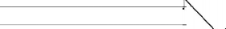
Etalon p:rimaîre
Mc:hhodo de ---------------------------- comparai eon
E!olons de référenco
----- M6thodè dé Mlithodc de -- -- -- - -- --- - - c:ompn.ra:tson <-oMp"-ralaon

.Ela.Ions do .Et;;lons de r�f6rcncè lrav�il
Métbo<lc cio Méthode de Méthode do comparaison c.ompa rai son compnr;,\�on \". Etalon• do Etalons do Instruments rd!érenee tr-avi>.11 de tr:1vall
Mé1hoda dl! compar.rition
lnstrum<1nts de tr:ivall |
Ordre de préc.hion
0
- � |
|
Il |
JI! |
IV |
- 47-
CHAPITRE 7
INSTRUMENTS DE MESURAGE CONSTRUCTION; ÉLÉMENTS CONSTITUTlilfS
7,1, CAT�GORIE D'INSTRUMENTS DE MESURAGE
Ensemble d'instruments de mesurage servant à mesurer la même grandeur ou pré-sentant certains traits caractéristiques communs.
Exemples:
ensemblo des instrumenta de pesage, ensemble do poids,
ensembfo des instruments mesurours de volumes de liquides rmtres que l'eau,
�nsDmble des instruments de mesurages mêtlorologlquos.
7,1.1. SYSTtME D'UN INSTRUMENT DE MESURAGE
Catégorie d'instruments de mesurage fondés sur le même principe de mesurage (5.1.1) Les di!Iérentes réalisations pratiques mettant en œuvre un même principe consti-
tuent des variantes du système fondé sur ce principe.
Rema�ques 1
Le 11y!rtème de l'instrummt de mesura.ge fu,;e Je principe de mesurage appllqut, sana entrer dans les meycna de rêallsation : par exemple, le thermomètre thennoélectrique dans lequel la force thenno61ectrlque est dêtermlnêe soit A l'aide d'un mllllvoltmètre, soit à l'aide d'un contpe.nS11teur éloctrlqu11, est un Instrument du syrlèill.e therrno-
-0leclrlque. Les doux r�all.satloos possibles lndiqoéee cl-deiisus constituent deux va:riante.s d11 ce syrtème.
De même, 16$ balances à bra.a égaux et leii bascules d6cl.males, qui apportlennent au sy&tème des inrtrutnonu de pesage è. levlors, correspondent à deux variantes de ce ayetème.
L'adjonction de disposltlls supplémentaires qui influent 1ur lss propriétés métrologiques de l'instrument : dispositif& de télétndlcatlon, d'enrcgi.'it.rement, de coruorvatlon et de reproductlon de• valeu.ra rnesurêe1 ne change pas le 6yatème de l'instrument de mesurage mais fixe une de ses variantes.
MOD�LE PROVISOIRE D'UN INSTRUMENT DE MESURAGE
Dispositif reproduisant les formes et le mode de fonctionnement d'un instrument de mesurage utilisant un système déterminé et destiné à l'étude de ses propriétés métro-logiques.
Remarques?
La eontormit6 de l'instrument définitif au modèle provisoire est obligatoire dans la mesure où t1 est néces-saire de conserver les propriété• métrologiques exigée! du système de l'instrument envisagé.
Les dlmen&lons des divers éléments du modllle provisoire pourront ne pas être exactement conformes aux dimensions des élément.A qui leur coITCspondent dana l'sxécutlon défin1Uvo.
J,1.2.1. MOD�LE D'UN INSTRUMENT DE MESURAGE
Réalisation définitive d'un instrument de mesurage dont tous les éléments influant • sur les qualités métrologiques sont convenablement définis.
Remarques:
1, Lei înst:rmnents d'un même modèle doivent être conlormcs entre eux: en ce qui concerne l'exécution (dli:nonslon, construction, matériaux, technologio) dans les limites de tolérances fixéeli.
2. Cepondant, dea Instruments d'un même modèle peuvent Qvoir dll8 étendues de meauroge dJff6rentes.
7.1.2..2. MOD�LE APPROUV�
Modèle d'un instrument de mesurage ayant reçu la sanction des Autorités compé-tentes de l'État (2.2.1) en ce qui concerne ses qualités mét;ologiques réglementaires.
7,1.l,l. EXEMPLAIRE TtlMOIN D'UN MODt:LE APPROUVtl
Exemplaire d'un instrument de mesurage dont le modèle est approuvé et qui joue le rôle d'un témoin (conjointement à une documentation convenable).
Remarque:
Dans certains cas d'instruments trop importants ou d'un prix de revient trop élevé, une documentation dé.t.aillée peut suffire 1!.Cule.
SCH�MA DE STRUCTURE
Présentation symbolique de la chaîne de mesurage de l'instrument avec indication des grandeurs transformées dans cet instrum�nt.
Remarque:
Les éléments lr®sducteurs sont en général représontés sous forme de rectruigles, A côté des ligne• (le liaison sont placés les symbole• dos grandeurs gui aortent de l'un des éléments transducteurs el entrent dana lo suivant.
Exemple:
..
Schéma. de structure du thennomètre thonnoélectrique (thermocouple).
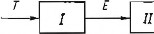
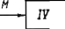
1 I• I
I• I 111
111
T : température,
E : force olectromot.rlce - I : Intensité da courant,
M : couple do rotation,
a : angle de la rotation de l'algulllo,
; thermocouplo,
: élément transdnctelll' E,
: système magnéto-61ectrtque du milllvoltmètre
: reasort spirale du roilllvollmètre
SCH�MA DE PRINCIPE
Représentation simplifiée des éléments essentiels et de leurs liaisons fonctionnelles d'un instrument de mesurage ou d'une installation de mesurage.
Exemple:
Schéma de prlnclp11 du thermomètre thermo�ectrique corresponds.nt au schéma dB structure présentll a11
point 7.2.
2
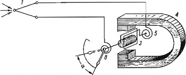
1 ; thermocouple,
2 : rus do jonction,
3 : cadr6 du galvanomètre,
4 : aimant constant du rnlllivalt.tnètre,
6 : ressort splrnle du mi.Illvoltmètre, 6 : atgullle,
ex : angle de la rotation de l'aiguille.
CHA"I'NE DE MESURAGE
Suite d'éléments transducteurs et d'organes de liaison d'un instrument de mesurage placés entre le capteur, premier élément de la chaîne, et le dispositif indicateur qui en est le dernier élément.
Exemple:
Le thenncnnêlro thertnotlectrique, avec un millivoltmètre cornmo organe Indicateur, peut être présenté comme une suite d'tlémonts transducteun sulvanh :
thermocouple, transforma.nt la tamp�ature T en uno force élocrtromotrice S fonction de T;
élément transducteur sous !orme d'Qn clrcuît élect:tlque fermé où sous l'lnfluoncc do la force électromotrice B se produit lo courant T fonction do E;
systimle magnétoélectrique. d'un milllvoltmètre transformant le courant J en couple de rotation M !onction do J;
ressort tl'11.osformant le couple de rotation M en nngle a fonction d6 M.
CAPTEUR
"Élément d'un appareil mesureur servant à la prise d'informations relatives à la grandeur à mesurer.
Remarque:
L11 capteur constiluB en même tempe le premier élément transducteur.
Exemples:
thermocoupls d'un thermomotre, organe déprlmogène d'un débitmètre, tube Dourdon d'un manomètrB, flotteur d'nn 11pparctl meaureur de niveau.
�LtMENT R�CEPTEUR DU CAPTEUR
Partie sensible du capteur qui se trouve sous l'influence directe de la grandeur mesurée.
7.3.l. �L�MENT TRANSDUCTEUR D'UN APPAREIL MESUREUR
Transducteur de mesurage (6.1.7) qui, étant une partie d'un appareil mesureur ou d'une installation de mesurage, ne constitue cependant pas un ensemble pouvant être utilisé séparément.
Remarques:
Le mystèmc d'éléments tramducleUl's qui composent le theimornotre thermoélectrique est représenté on 7.2.
Lea dlven éléments transducteurs 1Je sont pas toujours délimités matérlell&nent (pnr ex, dans le thenne-mètre t.hennoélectrlque, l'élément transducteur B -+ I n'est paa matériellement distinct de l'élém11nt transducteur T-+ B).
7,J.3. DISPOSITIF INDICATEUR
Ensemble des organes d'un appareil mesureur destinés à indiquer les résultats de mesurage.
Exemples:
Dans les appareils mesurcUl's munis d'un dlspolrltl!lndlcateur simple, ce dlspos!tl! se compose gênéralement d'une échelle et d'un index: dans les compteurs, le diBposltH indicateur (ou blon une partie de celul-cl) e.rt généra-lement constitué par un totalisateur.
7,3.J,1. INDEX
Partie fixe ou mobile du dispositif indicateur (aiguille, spot lumineux, surface d'un liquide, plume d'enregistrement, pointe etc...) dont la position par rapport aux repères permet de déterminer le résultat du mesurage.
Exemples:
une balance à bras égaux Mt munle d'une échelle fixa devant laquelle se déplace una aiguille qui forme l'index ;
dans un compteur watlhcuremètre n rouleaux, les fenêtres du diaposlt\f Indicateur constitue.nt le■ index fi).'.es au travers desquels 11ppara.lssent los chlllres de9 échelles mobiles.
7,3.3.2. REPl:RE
Trait ou autre signe porté par le dispositif indicateur et correspondant à une ou plu-sieurs valeurs déterminées de la grandeur mesurée.
Remarque :
Sur les 6chelles numérlqu85 et 5eml-numériquos, les ehif!res &ont aussl con1ldér61 comme des repèrea.
�CHELLE
Ensemble ordonné de repères portés par le dispositif indicateur de l'instrument de mesurage.
Remarques :
Lea repèros de l'êchollo peuvent être clill!re• ou non, la ehif!raJson peut êtra abstraite ou correapondre aux nnlt.és de mesure utilisêes.
Certains lnstrumenb, dits à 6tendues multiples, peuvent avoir soit plusieurs �cbelles, soit une seulo échelle à chlffraison cbllilgeante ou à commutateur de multlp!Jcatlon.
r
Exemple : échelle graduée et chiffrée.
: ·TT r Tr îr Tr TT Tr TTTrTr T7


L O- 1-. 2 _3 -4 5 6_ 2- B 11 10C!!!J
-53-
8
7.4.1, CHIFFRAISON D'UNE tCHELLE
Ensemble des nombres inscrits sur une échelle et correspondant aux valeurs de la grandeur mesurée déterminées par les repères ou bien indiquant seulement les numéros d'ordre des repères.
7.4,2. ZONE DE L't:CHELLE
Ensemble des échelons compris entre deux repères déterminés de l'échelle.
7,4.2,1. �TENDUE DE L't:CHELLE
Zone comprise entre les repères correspondant à la valeur minimale et la valeur maximale de l'échelle.
Remarques:
Cortalns lnstrument.s de mesurage peuvent avolr plusieurs étendues partielles d'échelle, exemple : t.hennomètres à liquide avec élargissements locaux du tube capillaire.
Dans les compteurs, l'étendue du dbpositif indicateur remplace l'étendue de l'éohells.
7.4.2.1.1. VALEUR MINIMALE DE L'lCHELLE
Valeur de la grandeur mesurée correspondant à la limite minimale de l'échelle.
Remarque:
Dailll les lnstromenl..s à étendues multiples, la • vale11r minimal,e de l'échelle de l'instrument est égale à la plus
petite des valeurs minimales des diverses échelks.
VALEUR MAXIMALE DE L'.êCHELLE
Valeur de la grandeur mesurée correspondant à la limite maximale de l'échelle.
Remarque:
Dans les instruments è. étendues multiples, la • valeur maximale • de l'échelle do l'inrtrument est égale à la plus grande de� valeurs maximales des diverses échelles.
7.4.3, i€CHELON
Intervalle entre deux repères successifs quelconques de l'échelle.
Remarques:
Dans los échelles à traits, l'échelon est l'intervalle entre les axes de deux traJts successifs.
Dans une échelle numérîque, l'échelon est l'intervalle entre deux nombres consécutUs.
7.4.3.1. LONGUEUR DE L'.êCHELON
Longueur rectiligne ou curviligne mesurée le long de la base de l'échelle et comprise entre les axes de deux repères consécutifs.
Remarque:
Dans les Instruments à étendues multiples, la plus petite des longueurs d'échclon des d!verses échelle11 repro!-
1ent,e la longueur de l'échelon de l'instrument •·
7,4,J,2. VALEUR DE L'�CHELON
Valeur de la grandeur mesurée correspondant à l'échelon.
Remarques:
1, La valeur de l'échelon est ex.primée av&c la même unitê de mesure que l'lndkation donnée par l'lnstmmeot
de me.enrage.
2. Dans les instrument.B à 6tendnes multiples, la plu� pet.ile des valeurs d'échelon iiea dlversea échelles représente la • valeur de l'échelon , de l'inslrument.
7.4.-4. tCHELLE A TRAITS
Échelle dont les repères sont constitués par un ensemble de traits.
Remarque:
L'échelle à traits est à indication continue.
7.4.4,1. BASE D'UNE �CHELLE A TRAITS
Ligne (matérialisée ou non) qui passe par les milieux des repères l_es plus courts d'une échelle à traits.
Exemples :
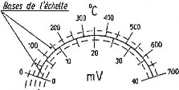
Base de t'dcllelle
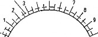
1
4 5 6
0 10
1f /
7.4.4.l. i!!!QUATION D'UNE lCHELLE A TRAITS
Équation qui détermine sur la base de l'échelle la position des repères par rapport
è. l'origine en fonction des indications.
Remarque:
L'ochclle est dénoJilJllée selon son équatJon: échelle l!m�alre, échelle quadratique, etc...
l:CHELLE 1:QUIDISTANTE
Échelle dont les échelons ont la même longueur.
Remarque:
..
Une échelle équidistants peul avoir une valeur d'écbalon conatante ou variable; daru le premier eu, elle Mt dite
7.4.4.1.l. �CHELLE A VALEUR D'l:CHELON CONSTANTE
Échelle dont les échelons ont la même valeur.
Remarque:
Une échelle à vllleur d'échelon constante peut avoir une longueur d'échelon constante ou variable; dans le pre-ro.lor cas, elle est dlte , régulière ,.
7.4.4.l.3, �CHELLE LINtAIRE
Échelle dont la longueur de chaque échelon est proportionnelle à la valeur de cet échelon (le coefficient de proportionnalité étant constant).
7.4.4.2.4.. i'::CHELLE R�GULl�RE
Échelle dont les é·chelons ont la même longueur et la même valeur.
=
Remarque:
L'échelle régulière représente un particulier de l'échelle llnfalre.
Exemples:
Fig. 1 : échelle régulière dans toute l'étendue.
Fig, 2 : échelle régulière dnns l'étendue de 9 à 36 ro3/h.
4'.I 50 80
20
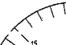
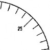
m3/h
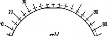
10 30
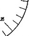
0 ,ac
a
FIG. l FIG . .2
VIA.2.5. �CHELLE NON-LIN�AIRE
Échelle dans laquelle les longueurs des échelons ne sont pas proportionnelles à leurs valeurs.
Exemple : x�o1 2 3 4 5 6 7 8 9 10 m1/h
.1
échelle� quadratiques logarithmiques, etc... 11111 1 1 11 1
1
y 
111
.Y= axz
7.4.S. �CHELLE NUM�RIQUE
Échelle dont les repères apparaissent de façon discontinue et sont constitués par des chiffres aUgnés indiquant directement la valeur numérique de Ia grandeur mesurée.
L'échelle numérique est à indication discontinue.
Remarques :
L'onsemblc de& c:hllîres coustltuanl une écbeJle ou.mlirtque peut 6tre placé sur une ou plusieurs Burlncos plane, (ou non) sur le.squelles les chiffre.9 à lire apparaissent brusquement.
Exemple:
,... - - �,
échelle numé.rlque composée de quatre aâriCII de cblJireB placés sur des rouleaux : Ica chiffres à lire apparaissent
dans le fenêtre. - - - - - -
r"--------.,..-,... 1
1 ..-7''""-="TT"C,.,.....,.....,...,..,.....�� 1
l 1
1 1
1 1
1 1
1 �s:,,..._i.._���-1' .)
L j,,"
7.4.5.1. �CHELLE SEMI-NUM�RIQUE
Échelle numérique dont le premier chifîre à droite, c'est-à-dire celui qui appartient à l'échelle qui a la plus petite valeur d'échelon, se déplace d'une manière continue et permet la lecture à une fraction de l'intervalle entre deux nombres consécutifs.
Généralement, l'interpolation d'une indication semi-numérique s'elîectue au moyen
<l'une échelle supplémentaire à traits.
Exemple :
lndlcaUon du compteur 27832,4
CADRAN
Élément d'un dispositif indicateur portant la ou les échelles.
Remarques:
1. Le cadran peut être plQn, cyllndrique ou tronconique,
s'il est cylindrique ou tronconique, on l'appelle • tambour gradué •,
dans certains Instruments optiques, le cadran plan circulaire est souvent appele • limbe ,.
2. DQllS les dispositifs indicateurs numériques, les rouleaux ou disque!! chillrés remplissent la fonction d'échelle.
3. L'échelle peut être mnlérielicment trucée ou projetee oplîquement.
SUPPORT D'ENREGISTREMENT
Bande, disque ou feuille (ordinairement en papier) sur laquelle sont enregistrées, sous forme d'un diagramme, les indications d'un appareîl mesureur.
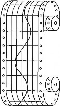
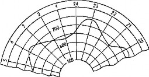
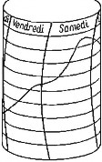
Bande Disque Feuille
TOTALISATEUR
Partie ou ensemble d'un dispositif indicateur totalisant les indications d'un ap-pareil mesureur.
Remarques:
L'augmentation des lndicatlons d'un totalli<ateur peut se taire d'une façon continuo ou discontinue, lnd&-pend0.IDJllent de la continuité ou discontinuité do fonctionnement de l'appareil mosureur.
TI existe des lotalisnteurs qui enregistrent toutes les indications successives de l'appareil lors de l'ensemble do ses me�ura�cs et qui ne peuvent être remis à volonté à zéro et des totalisateurs dit., pnrlîels qui n'eoregbtrent que les Indications de l'appareil pour un certain mesll.I'age (ou un certain nombre de mesurages) et qui peuvent être remis à zéro en fln de ces rnesuriuies.
CYCLE DE FONCTIONNEMENT D'UN APPAREIL MESUREUR
Ensemble de mouvements consécutifs des organes mobiles d'un appareil mesureur à la fin desquels tous les organes, sauf le dispositif indicateur, reprennent pour la première fois la position qu'ils avaient à l'instant initial.
Remarques:
Cette notion s'applique a.ux: instruments è. [oncUonnement dit • continu. ,.
Le volume cycli.qlle d'un compteur volum6trique csL le volume mesuré au cours d'un , cycle , de fonctlonne-roent de ce compteur.

CHAPITRE 8
ERREURS DES RÉSULTATS DE MESURAGES ET ERREURS DES INSTRUMENTS DE MESURAGE
ERREUR DE MESURAGE
Discordance entre le résultat du mesurage (5.4.) et la valeur de la grandeur mesurée.
Remarques:
La valeur de la grandeur mesurée esl une valeur de comparalson égale suivant les cas à : la valeur vraie de la grandeur (généralement inconnue),
la valeur conventionnellement vraie,
la moyenne arithmétique dos résult.au; d'une série de mesuragex.
La discordance peut t\lre exprimée comme la différence entre ces deux valcur6 (8.1.5 - Erreur absolue)
ou h!en comme le quot!ent de celte dl.f{érenee par la valeur de la grandeur mesurée (8.1.6 - Erreur relative).
ERREUR SYST�MATIQUE
Erreur qui, Jars de plusieurs mesurages, eITectués dans les mêmes conditions, de la même valeur d'une certaine grandeur reste constante en valeur absolue et en signe ou qui varie selon une loi définie quand les conditions changent.
Remarques :
Les causes des erreurs systématiques peuvent Ure connues ou inconnues.
Une erreur systématique. que l'on peut déterminer par le calcul ou pnr l'expérience doit être 11liminéo par uno correction appropriée.
Les erreurs systématiques que l'on ne peul pas déterminer, mais dont la valeur est supposée suffisamment petite par rapport à l'imprécision du rnesnrage, soot traitées comme des erreurs fortuites dans le calcul de l'incer-titude de mesurage.
Le.< erreurs sysltmaliquee que l'on oe peut pas déterminer, mais donl la valeur est supposée suffisamment grande par n1pporl à l'imprécision du mesurage, doivent être évaluées 11p1lrn:i..'irnn.tivement et prises en considéra-tion dans le calcul de l'imprécision du mesurage.
Exemples:
erreurs syst6m.atlques e-0n81:antes :
erreur qul résulte du pesage à l'aide d'un polds dont la masse est supposée égale à sa masse nominale de 1 kl! tandis que sa masse vraie conventionnelle est dti 1,010 kg,
-61-
9
erreu:r qui résulte du tait que l'on se sert, à une templ:ratu.re ambiante de 20•C, d'une règle calJbrée à O•C sans Introduire de correction convenable,
erreur qui rémlte de ce que, dll!ls le circuit d'un thermomètre thurmoélectr!qne, se produisent des forces ther-moelectrlqucs parasites.
Erreur systématique variable :
erreur d'indication d'un instrument de me8llmge occaslonnéo, lors do plusleurs me.surages consécutl!& de la rnèlne v-o.1lour, par une variation systématique de la tempé.rn.lure..
8.1.1,1. CORRECTION
Valeur qu'il faut ajouter algébriquement au résultat brul du mesurage (5.4.1.) pour obtenir le résultat corrigé (5.4.2.).
-
Remarque:
La correction est é.gale à l'erreur absolue du result.at brut du mesurage changé de signe :
ERREUR FORTUITE
Erreur qui varie d'une façon imprévisible en valeur absolue et en signe lorsqu'on etîectue un grand nombre de mesurages de la même valeur d'une grandeur dans des con-dîtions :pratiquement identiques.
Remarques :
On ne peut pas tenir compte de l'erreur fortuite sous forme d'une correotlon apportée au résultat brut du mesurage;
on peut seo.lement, à la fin d'une série de mesuragca exécuUs dans des conditions pratiquement identiques (à l'aide du même instrument de mesurage et par le mêmo observateur, dans les mêmes conditions d'ambiance etc... ), ftxor les llmltes dans lesquelles so trouve, avec une probabilité donnée, cette erreur.
On utilise aussi le terme • erreur accidenleUo • ou • erreur aléatoire •·
ERREUR PARASITE
Erreur souvent grossière qui résulte d'une exécution incorrecte du mesurage.
Exemples :
Erreurs qui ré.sultent :
de la lecture fa.um: d'une lodlca.tion,
de l'usage d'un instrument devenu défectueux, du mauvais omplol d'un instrument.
-62-
LOI DE COMPOSITION DES ERREURS
Loi reliant l'erreur commise sur le résultat d'un mesurage indirect d'une grandeur aux en-eurs commises lors des mesurages directs <les grandeurs composantes.
Exemples :
Sl ln grandeur Y mcsurêe lndlrcclcment csl ll6c 1W<lc les grandeurs composantes lndépcnduntc:s X 1, X2,,.. X"'
(mesurées direclernonl) pnr l'êquntlon :
Y = P (Xi, X2... Xn1))
l'erreur syslém11tlqu<l 6. Y de mesuro.go Indirect de lu grandeur Y s'exprime (en gên6rnl Approxlmnllvomonl seulement) par ln loi su!vnnle de composition des erreurs :
'8F aF aF '
!::.Y= -- 6.Xi + -- 6.X2 + ... + -- 6.,'l!.m
-
�Xi t1X2 �Xm
oi:I l!.X1, l::.Xi ... l!.Xm représentent les erreurs sysl.émaUques de mesurage direcl dos grnndeurs X1. X2 ... Xm
L'écar\. moyen quadratique de me11uragc indirect do la grandeur Y s'exprime (eu gén.éral opprox1malivc• ment seulement) par la loi suivante do com1ms1Llon des �carts moyens Qliaclral.iques :
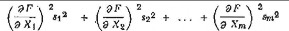
oti �t, � ... Sm rcpréscntcnl les �cnrL� moyens qtuidnillques clo mesurage direct dos grnndeurs X 1, X2 ... X,.,.
Les donn�cs partlolles dans los forlnu.lcs cl-d�sus dolvenl Hrc CRlculêes pour un point détcrmluê.
8,1.4,1. ERREUR PARTIELLE
Partie de l'erreur du mesurage indirect d'une grandeur qui résulte de l'en·eur commise sur une grandenr composante.
Exemple:
Dans les exemples du 8.1.4 les exprcsglons :
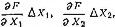
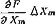
on
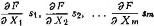
représentent les orrours systém:itlques portiell� ou les écarts moyens qu:\dmllques partiels du m�urnge dlrect des srandcun X1, X2 ... Xm.
8.1.S. ERREUR ABSOLUE
Différence algébrique entre le résultat du mesurage et la valeur de comparaison : erreur absolue = résultat du mesurage - valeur de comparaison.
Cette valeur de comparaison peut être la valeur vraie, (11.2.1.) la valeur convention-nellement vraie (4.2.1.1.), ou la moyenne arithmétique des résultats d'une série de me-surages.
8,1.5.1. ERREUR ABSOLUE VtRITABLE
Différence algébrique entre le résultat du mesurage et la valeur conventionnellement vraie (4.2.1.1.) de la grandeur mesurée.
Exemple:
Lo résultat d'un mesurage est 10,1 mm; Bi 1n valeur conveutionneil6lllent VTaie do la grandeur est 10,3 mm l'errollr absolue véritabls ert (10,1 - 10,3) mm ... - 0,2 mm.
8.1.S.l. VALEUR ABSOLUE DE L'ERREUR
Valeur de l'erreur, abstraction faite de son signe.
Remarque:
TI faut faire une distinction entre le terme " erreur absolue • et le termo • valeur o.bsoluc de l'errelll' •; dans ce demi& cas, le quoliflcatif • 9.bsoluo , se rapporte seulement au signe.
Exemple 1
SI l'erreur maximale toléréo d'un instrument de mesurago ost 6gale à ± 0,2 mm, la valeur absolue de cette erroor est 1 ±0,2 1 mm = 0,2 mm.
Dans l'exemple cité. ci-dessus la valeur absolUll de l'erreur est aussi 1 ± 0,2 1 mm ... 0,2 mm.
8.1.5.l. ERREUR ABSOLUE APPARENTE
Différence algébrique entre un des résultats d'une serie de mesurages et la moyenne arithmétique de l'ensemble des résulta):s de cette sérîe.
Remarque:
En abrégé, on appelle siI!lplement cette erreur • errellr apparente •·
Exemple:
si les résultat.B de 5 mesurages d'un même cfulmètrc exécutéB à l'aide d'un mêmo pled à coullise, par le même observateur, à la mt,mo Ulmpérn.ture ambiante etc... (et ayllilt de• poids égaux) aont lJls sulv11I1tes :
d1 = 15,6 mm; d2 = 15,8 .ruin; d3 "" 15,8 mm; 4 = 15,8 mm; d6 = 15,7 mm;
la moyenne arithmétique de ces résultats est égale id = 1/6 (15,e + ... + 15,7) mm - 15,7 rom.
et les erreur& apparentCli de!I résultats pnrticullers sont:
vi = d1-d = 15,6 mm-15,7 mm= - 0,1 mm et 11<..1 = da-d = 15,8 mm -15,7 mm ... + 0,1 mm etc.
- 64-
•
ERREUR RELATIVE
QuoLient de l'erreur absolue par la valeur de comparaison utilisée pour le calcul de cette erreur absolue.
Cette valeur de comparaison peut être la valeur vraie, la valeur conventionnellement
vraie, ou la moyenne arithmétique d'une série de mesurages.
Exemple:
On II dêtcnn!né la valeur coovenUonnellcmenl vraie d'une lonsueur 1 = 15,20 mm cl on a trouvé comme résultat du mesurage 1 = 15,07 mm el l'eTTcur absolue véritable e = (15,07 - 15,20) mm = - 0,13 mm.
L'erreur rolative est :
E e --= 0, 13
I 15,2
- 0,008ü 0,86 %
8,1.7.1. �CART MOYEN QUADRATIQUE (�CART-TYPE) D'UN SEUL MESURAGE DANS UNE S�RIE DE MESURAGES
Indice caractérisant la dispersion des résultats obtenus dans une série den mesurages de la même valeur d'une grandeur mesurée, donné par la formule :
S _ \) i (X, - xfl
- -l -=n1---�1-
Xr étant le i0me résultat de mesurage (i = 1, 2, 3, . . . n) et x la moyenne arithmétique des n résultats considérés.
Remarque:
1. La valeurs calculéo d'nprès cetle déflnilion est en !ait une estimation de l'écart moyen quadratique apparent car, d'une part on calcule s d'après ù.cs donoées expérimenlales et d'autre part les dil!érenccs (a:.; -X) représentent les erreurs absolues apparentes.
2. �CART MOYEN QUADRATIQUE (�CART-TYPE) DE LA MOYENNE ARITHM�TIQUE D'UNE StRIE DE MESURAGES
s
Indice caractérisant la dispersion de la moyenne arithmétique d'une série de mesurages indépendants de la mème valeur d'une grandeur mesurée, donné par la formule :
s, = v:n
où s est une estimation de l'écart moyen quadratique d'un seul mesurage d'une série et n le nombre de mesurages de la série.
Remarque:
L'augmenlation du nombre des mesurages permet de dlm1nuer l'importance des erreurs fortuites, en acceptant comme le résultat d'une série de mesurages une moyenne des résultats particuliers.
INCERTITUDE DE MESURAGE
Caractéristique de la dispersion des résultats de mesurage définie par les erreurs limites.
ERREURS LIMITES D'UN SEUL MESURAGE D'UNE S�RIE
Erreurs extrêmes (en plus et en moins) dont la probabilité de ne pas être dépassées par l'erreur sur un mesurage quelconque d'une série a une valeur P telle que l'on peut estimer que la di!Térence 1 - P est négligeable.
Remarques :
On calcule en général les erreurs liD'lites d'un seul mesurage comme le produit de l'écart moyen quadratique d'un seul mesurage d'une série pal' un nombt"c t (entier ou tractloonalre); on a alors ; e1 = + ls et c2 = - 1.8
où s est défini selon 8.1.7.1 et le nombre lest fixé en (onction de la probabilité P de ne pas d6passer les valeurs e1 ou e2.
Dans le cas de la lol de la dlslrlbullon nonnale des erreurs et pour un suffisamment grand nombre de mesurages, on pose souvent l = 3, ce qui correspond à la probabilité P = 99,73 % d<l ne pas dépasser dans la série de mClinrages Je5 valeur& et = 3s et e2 = - 3s ;
pourP=95%, ona t=1,96etpourP=99%, ona !=2,58 ...
La définition cl-dessus des errenrs limites iruppose que l'on a corrigé lo r6sultat des erreurs syslématlqu� ; oos erreurs llroites contiendront cependant encore les •résidus, de ces erreurs S}l1tématiqrres.
La probabilité P correspond ou terme rtatlstlque " niveau de confiance ,, et les erreurs limites au terme limites de confian� •·
ERREURS LIMITES DE LA MOYENNE ARITHM�TIQUE D'UNE S�RIE DE MESURAGES
Erreurs extrêmes (en plus et en moins) dont la probabilité de ne pas être dépassées par l'erreur sur la moyenne arithmétique d'une série de mesurages a une valeur P telle que l'on peut estimer que la dirrérence 1 - P est négligeable.
Remarques:
On calculo en général les erreurs limites de la moyenne lll"ithmétique d'une a6.rle àe mesurages de la rnérne façon que celles relaUvcs à un seul mesurage mois en uUUsant l'éeaJ"t moyen quadratique s,.
Pour un pet\t nombre de mesurages, on se sert des valeurs t caJcul6es selon la distribution de Student.
8,1.8.3. INCERTITUDE D'UN SEUL MESURAGE D'UNE StRJE
Incertitude exprimée par la formule : ± l . s
8,1,B.4, INCERTITUDE DE LA MOYENNE ARITHM�TIQUE D'UNE stRIE
Incertitude exprimée par la formule : + 1 . Sr
8.1.8.S. ZONE D'INCERTITUDE DE MESURAGE
Valeur exprimée par l'expression 2/.s pour un seul mesurage et par 2l.s, pour la moyenne arithmétique d'une série de mesurages.
Elle correspond au terme statistique cc intervalle de confiance i>.
8,1.9. IMPR�CISION DE MESURAGE
Imprécision qui s'exprime par l'ensemble des erreurs globales limites du mesurage comprenant toutes les erreurs systématiques ainsi que les erreurs fortuites limites.
Remarque:
Toutes les errours systématiques étant corrigées, l'in,précigjon est égale à l'lncertitudo de rnesurnge,
ERREUR INSTRUMENTALE
Erreur provenant de l'instrument utilisé pour le mesurage.
Exemples:
Erreur (I1lÏ résulte entre autres :
du frottement entre les éléments mobllll.!! de 1'io1lrument,
de la disposition 1ncorrectB des traits do l'échelle, de 1'1n6gal\té des bras d'une balance..
8.l.1. ERREUR (D"INDICATION) D'UNE MESURE MATtRIALIStE
Différence Vn - v. entre la valeur nominale vD et la valeur conventionnellement vraie
v� reproduite par la mesure matérialisée.
Remarque·s :
1. Voir 6.3. remarque 1.
2, Si aucwto con!ueion n'est à craindre, on utilise l'expresston simplifiée , erreur <l'uno mesure matérialiste •
Exempte:
Dans l'exemple relatif au point 8.2.5 : e1 = vn - Ve = 1 000 ml - 1 005 ml = - 5 ml ln dé.nomination est donc trop potlte par rapport à la voleur vroie de In mesure.
ERREUR (D'INDICATION) D'UN APPAREIL MESUREUR
Différence v, - Vu entre la valeur indiquée par l'appareil mesureur v; et la valeur conventionnellement vraie de la grandeur mesurée v•.
Remarque:
Si aucune confusion n'est à craindre, on peut utiliser l'expression simplifiée • erreur d'un appareil mesureur •·
Exemple:
L'indication d'un ampèremètre est v; = '10 A ; si lo. va.leur conventionnellement vrale de l'intensité du courant mesur6 est Ve = 41 A ; l'erreur d'indication de l'ampèremètre est ei = 40 A - 41 A = - 1 A.
ERREUR DE ZÉRO
Indication d'un instrument de mesurage pour la valeur zéro de la grandeur mesurée.
�CART MOYEN QUADRATIQUE (ÉCART-TYPE) D'UNE SEULE INDICATION DANS UNE SÉRIE D'INDICATIONS D'UN INSTRUMENT DE MESURAGE
Indice caractérisant la dispersion des indications (9.6.1) d'un instrument de mesurage obtenues dans une série de n mesurages de la même valeur d'une grandeur mesurée, et donné par la formule :
s = y
1 i=_c1x_;_--.x_)2_
I
x, étant la i•111• indication de l'instrument ( i arithmétique des n indications considérées.
1, 2, 3,...n) et x la moyenne
Remarques :
Selon les conditions dans lesquelJos on cfîectue les mesurages, s peut représenter wie mesure des dlfflirenteB proprittés de l'instrument (fidéllté, stabilité ...)
La valeur calculée d'nprh cotte dHlnition est en fait une estimation del' écart moyen quadro.Uque apµarent car d'une pm-L on calcule a d'après des données expérimentales et d'autre parl les différences (x, - x) représentent des erreurs absolues opparnntes.
La notion envisagée se rapporte aussi bien aux appareils mesureurs qu'aux mesures matérialisées graduée.. JI est /J. remarquer qu'en cc qui concerne les mesures inatérlaJisécs qui ne reproduisent qu'une seule v:ileur (011
plusieurs valeurs séparées) d'une grandeur, U n'est lbéorlquoment pal! tout à fait correct de parler de disper&ion
de leurs • indications • étant donné qu'elles :représentent des valeurs constantes.
Cependant, dans ce cas, on peut s'intéresser à la dispersion de la valeur reproduite de la grandeur, dispersion que l'on peut connalt.rc par des comp11raîsons avec un étalon.
.5. ERREUR DE CALIBRAGE D'UNE MESURE MAT�RIALIS�E
Difiérence Ve - Un entre la valeur conventionnellement vraie Va reproduite par la me-sure matérialisée et la valeur nominale Vn de cette mesure.
Exemple:
Une mesure de capacité contient v0 = 1005 ml et sa dénomination est " 1 litre •, soît v,. = 1 000 ml, l'erreur de calibrage de cette mesure est égale à ; e = 1 003 ml - 1 000 ml = + 5 ml,
la valeur vraie de la mesure étant trop grande par rapport à sa dénomination.
ERREUR DE BASE D'UN INSTRUMENT DE MESURAGE
Erreur d'un instrument de mesurage lorsqu'on l'utilise dans des conditions de réfé-rence (9.1.3).
ERREUR COMPL�MENTAIRE D'UN INSTRUMENT DE MESURAGE
Erreur d'un instrument de mesurage provenant du fait que les valeurs des grandeurs d'influence sont différentes de celles qui correspondent aux conditions de référence.
Remarque:
Chacune des grandeurs d'lnlluence (4.1.2), lorsque sa valeur s'écarte de sa valeur de référence (9.1.1) ou de son domaine de référence (9.1.2), provoque sa propre erreur complémentaire.
VARIATION D'INDICATION D'UN INSTRUMENT DE MESURAGE
DiITérence entre les valeurs mesurées d'une grandeur, lorsqu'une grandeur d'influence prend successivement deux valeurs spécifiées, sans qu'on cl1ange la grandeur mesurée.
8.2.li.2. ERREUR DUE A LA TEMP�RATURE
Erreur provenant du fait que la température de l'instrument ne conserve pas sa valeur / de référence.
8.2.6.2.1. COEFFICIENT DE TEMP�RATURE D'UN INSTRUMENT DE MESURAGE
Variation relative des indications de l'appareil mesureur ou des valeurs vraies de la mesure matérialisée lorsque sa température varie de 1 °C.
Exemple:
Si le c.oeffic!ent de température d'un manomètre à ressort (dont la température de réfêrence est 20 "C) est par exemple 8 . 1ü-4 uc-t et si l'instrument est utilisé à la tcmpérnture 30 •C, son lndîcn.tion est affectée d'une erreur (dans ce cas en plus) de 0,8 %-
8.2.6.3. ERREUR DUE AU FROTTEMENT
Erreur due aux frottements des éléments mobiles de l'instrument de mesurage.
8.2.6,4. ERREUR DUE A L'INERTIE
Erreur due à l'inertie (mécanique, thermique ou autre) des éléments de l'instrument
de mesurage.
-69-
10
ERREURS MAXIMALES TOLll�R�ES LORS DE LA V�RI FICATION
Valeurs extrêmes de l'erre.ur tolérée (en plus et en moins) par les rè.glements sur les diverses vérifications pour un instrument de mesurage.
Remarques:
Dans Je. terminologie relative awc mesurages, Il y a lieu, dans le même 118prlt que celui de la Mûnltlon et-dessus, d'éviter l'emploi du terme , tolérance ,,
L'erreur maximale tolérée peut être exprimée en valeur absolue ou en valeur relative.
Pour les dill'érentea &oriels d'erreurs m11.Xlma.les toléroos, voir chapitre 9,
8.3.1. ERREURS MAXIMALES TOLtRtES EN SERVICE
Valeurs extrêmes de l'erreur tolérée (en plus et en moins) par les règlements pour un instrument de mesurage, lorsque celui-ci est en service.
8.4, ERREUR DE M�THODE
Erreur due à l'utilisation d'une méthode de mesurage qui est incorrecte compte tenu de la nature des instruments de mesurage utilisés.
Exemple;
Mesurage d'une force à. l'aide d'un dynamomètre à ressort pour lequel on a rupposé une rola.tion llné.alre entre la déformation et la force, a.lors qu"en réalité la fonction qui Ile ces deux grandeurs n'est p11s lln_ê..nire.
ERREUR D'OBSERVATION
Erreur commise par l'observateur pendant le processus de mesurage.
Exemples:
Lors d'un mesurage d'une intensité lumineuse ou d'une température de luminance, effectrnl à. l'aide d'un photomètre à contraste ou d'un pyromètre optique à Olament disparaissant; erreur due à. une égallsatJon lncorrecl.u de l'écla!rem1mt de deux zones.
Lors d'an meauroge effectué à l'o.ide d'un pont électrique li courant e.lternalit: erreur due à ll.l1 réglage in-
correct du minimum du l'inten!Jité du son dans le récepteur téléphonique.
Dans ces deux exemples, l'erreur de lecture de l'lndicatlon des appareils de mc&11re utillilés no repré1cntc qu'une petite fraction de l'erreur totale d'observation.
8.5.1. ERREUR DE LECTURE
Erreur d'observation résultant de la lecture inexacte de l'indication d'un instrument de mesurage par l'obseTVa.teur.
8.5.1.f. ERREUR DE PARALLAXE
Erreur de lecture qw se produit lorsque, l'index étant à une certaine distance de la surface de l'échelle, la lecture n'est pas effectuée dans la direction d'observation prévue pour l'instrument utilisé.
8.5.1,2. ERREUR D'INTERPOLATION
Erreur de lecture résultant de l'évaluation inexacte de la position de l'index par rap-port à deux repères voisins entre lesquels l'index est situé.
COURBE D'ERREURS D'UN INSTRUMENT DE MESURAGE
Courbe qui représente l'erreur d'un instrument de mesurage en fonction, soit de la
grandeur mesurée, soit de toute autre grandeur qui influe sur cette erreur.
8.6.t. COURBE D,ETALONNAGE D,UN INSTRUMENT DE MESURAGE /
Courbe qui exprime la correspondance entre les valeurs de la grandeur mesurée et les valeurs indiquées par l'instrument.
8.6.2. COURBE DE CORRECTION D'UN INSTRUMENT DE MESURAGE
Courbe qw exprime, en fonction d'un certain paramètre, les corrections à apporter aux résultats obtenus avec un instrument de mesurage.
-71 -
10 o

CHAPITRE 9
CONDITIONS D'EMPLOI
ET QUALITÉS MÉTROLOGIQUES DES INSTRUMENTS DE MESURAGE
CONDITIONS USUELLES D•EMPLOI
Conditions qw doivent être respectées pour employer correctement l'instrument de mesurage, compte tenu de sa conception, de sa réalisation el de sa destination.
Remarques:
Les conditions usuelles d'emploi peuvent se rapporter entre autres: à l'espèce et ù l'état de la matière mesu-rée, aux valeurs d!l la grandeur mOBurce, aux vlllcurs des grandeurs d'ln!Juonce, aux conditions d'obsruvation des lndlce.tion& et.c.....
Lorsque ces conditions sonl lndlqul\es sur l'inslrument ou dans un mode d'emploi de celui-cl, ellos sont ap-pcMes • conditions nominales•·
9.f.1. VALEUR DE R�F�RENCE
Valeur d'une grandeur d'influence (4.1.2) pour laquelle sont fixées les erreurs de base (8.2.6) maximales tolérées.
DOMAINE DE R�F�RENCE
Étendue des valeurs d'une grandeur d'influence pour laquelle sont fixées les erreurs de base maximales tolérées.
CONDITIONS DE RlF�RENCE
Ensemble de valeurs de référence ou de domaines de référence des différentes gran-deurs d'influence d'un instrument de mesurage.
9,1.4, DOMAINE NOMINAL D'UTILISATION (POUR UNE GRANDEUR D'INFLUENCE D�TERMIN�E)
Étendue des valeurs que peut prendre une grandeur d'influence et à l'intérieur de laque1le les erreurs complémentaires (8.2.6.1) correspondantes ne dépassent pas des valeurs maximales tolérées.
�TENDUE DE MESURAGE
É.tendue cles valeurs de la grandeur à mesurer pour lesquelles les indications d'un instrument de mesurnge, obtenues dans les conditions 11suelles d'emploi en un seul mesurage, ne doivent pas être entachées d'une erreur supérieure à l'erreur maximale tolérée.
Remarques:
Dans certains cas, les valeurs absolues des erreurs maximales tolérées peuvent être respectées dans l'étcnchie de la portée minimale, mais ulors les erreurs relatives risquent de devenir trop importantes pour permettre l'utili-sation pratique de l'instrument (cas des environs du 2êro).
Certains instruments de mesurasc peuvent avoir plusieurs él.ondues de mesurage.
L'aen<lue de mesurage peut être couverte par l'étendue de l'échelle (7.4.2.t) 011 bien elle peut n'en consti-tuer qu'une partie seulement.
Aux instruments de la premlèrc caUgorie appartîennent entre autres : les thermomètres médicaux, les aréo-mètres, etc ...
Comme exemple des Instruments de la deuxième catégorie, on peut citer les manomètres à tube Bourdon avec lesquels on ne doit pas mesurer des pressions, d'une part, an-dessous d'une certaine valeur CI1r l'erreur des indl• cations serait rrlors exce�sive, d'autre po.rt, au-dC5SU& d'une certaine valeur par suite d'une résistance et d'une dura-blllté lnsulftsantes (les conditions usuelles d'emploi et des raisons de sécutllé n'autorisent d'allleun; pas l'utilisation de ces manomètres dans celte dernière :zone, quoique les erreurs puissent éve11tuellement y rester dans les llmlte! tolérées).
Pour les compteurs, au lieu de l'étendue de mesurage de ln grandeur mesurée (p. ex. pour les compteur d'eau : le volume), on applique l'étendue des charges (par ex. pour les compteurs d'eau : le dé.bit).
9,1.1. PORT�E MAXIMALE
Valeur de la grandeur à mesurer correspondant/à la limite maximale de l'étendue de mesurage.
Remarque
Dans certains cas la portée maximale est déterminée par des conditions de sécurlt6.
l. PORTéE MINIMALE
Valeur de la grandeur à mesurer correspondant à la limite minimale de l'étendue de mesurage.
9.].l. CHARGE D·UN COMPTEUR
Grandeur dont l'intégration en fonction du temps donne la valeur de la grandeur mesurée par le compteur.
Exemple:
DB.llli les coJnpteurs de liquides et les compteun de gaz, la charge est représentée par le débit ; dans lei comp-teUI'II d'én1irgie électrique, c'est la pulssanco élcctrlqa.e.
9,2.4. �TENDUE DE LA CHARGE D'UN COMPTEUR
Étendue des valeurs de la charge pour laquelle les indications d'un compteur, obte-nues dans les conditions usuelles d'emploi, ne doivent pas être entachées d'une erreur supérieure à l'erreur maximale tolérée.
9.2.5. CHARGE MAXIMALE D'UN COMPTEUR
Valeur de la charge correspondant à la limite maximale de l'étendue de la charge.
CHARGE MINIMALE D'UN COMPTEUR
Valeur de la charge correspondant à la limite minimale de l'étendue de la charge.
SIJRCHARGE D'UN INSTRUMENT DE MESURAGE
pour les instruments de mesurage autres que les compteurs : valeur de la partie de la grandeur mesurée qui excède la portée maximale de l'instrument,
pour les compteurs : valeur de la partie de la charge qui excède la charge maxi-male du compteur.
Remarques:
Pour Ja limite de la valeur tolérée de la surcharge, on utullle la dénoroin11tion , surcharge maximale tolérée•·
On diltîngue les surcha:raes de • faible dnree • et d,e longue dur�e ,.
9,2.8, CADENCE DE MESURAGE MAXIMALE [MINIMALE]
Nombre de mesurages par unités de temps au-dessus [au-dessousj duquel les résultats de mesurage obtenus avec l'instrument sont susceptibles d'être entachés d'une erreur supérieure à l'erreur maximale tolérée.
Remarque:
Cette notion s'appl.iqu� aux instruments de mesurage répétiteurs à fonctionnement discontinu (pnr ex. doseuses volumétriques ou po11détn.les, peseuses).
A
9,3. SURETl DE LECTURE D,UN INSTRUMENT DE MESURAGE
Qualité d'un instrumenL de mesurage dont le dispositif indicateur est réalisé de telle sorte qu'il permet de connaître l'indication sans ambiguïté.
SENSIBILITÉ D,UN INSTRUMENT DE MESURAGE
La sensibilité d'un instrument de mesurage, pour une valeur donnée de la grandeur mesurée, s'exprime par le quotient de l'accroissement de la variable observée par l'ac-croissement correspondant de la grandeur mesurée ;
dl
k = dG
Remarques:
Dans les Instruments les plus courants, où l'accroissement de la variable observée se traduit pnr le dépla-cement relatif d'un index cl d'uno échelle, la sensibllllé s'e-xprime conventionnellcmenl par le quotient de co dépla-cement dl le long de la base de l'échelle par l'aecroisserncnl d G de la grundcur mesurée qui l'a provoqué.
Celte valeur peut êlre constante ou variable le long de l'échelle,
En pratique, on peut prendre comme valeur de la sen&Jbllllé des instruments de mesurage à échelle Je quo-tient de la longueur de l'échelon par la vnJeur de celui-ci.
S. Dans le cas où le numéraleur el le dénominateur sonl des grandeurs de lu même espèce, la sensibilité s"oppello
, n1pport de transmission ,,
JUSTESSE D'UN INSTRUMENT DE MESURAGE
Qualité qui caractérise l'aptitude d'un îns trument de mesurage à donner des indications égales à la valeur vraie de la grandeur mesurée, les erreurs de fidélité n'étant pas prises eilil considération.
Remarque:
D'après cotte déflnlUon, la justesse caractéMse l'aptitude <l'un instrument à donner des Indications qul ne soient pas entachées d'erreurs systématiques.
9.5,1. ERREUR DE JUSTESSE
Somme algébrique (résultante) des erreurs systématiques entachant l'indication d'un instrument de mesurage dans des conditions déterminées d'emploi.
Remarque:
Pratiquement, on détermine l'erreur de justesse e; d'une mesure matérialisée comme ttant la dltUrence entre aa valeur nominale v,. et la moyenna arithméUque u0 dos valeurs VI'll.ies conventionnelles de la mesure matérialisée trouvées comme ré.sultats d'une sérle de mesurages consécul.i!s, effectués dans le.s conditiom usuelles d'emvlo1 :
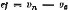
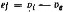
De la mCme façon, on détermine l'erreur de justesse d'un instrument mesureur comme étant la dlfTérenco entre 111 moyenne ar!thmétiqueï;'i des lndlc.atlons donn�es par l'instrument dans une sêrle de mesurages c-ons6cutifs d"nno même grandeur, efTcdués dans les conditions usuelles d'emploi, et la valeur conventionnellement vraie vG de la grnndeur mesurée :
Exemple:
Si un courant électrique est mesuré avee un microampèremètte et si les 10 valeurs suivantes en m1eroampères ont été trouvées :
6,27; ô,38; 6,62; 6,18; 6,31; 6,43; 6,36; 6,00; 6,35; 6,50; la moyenne arlthmHiqne de ees valeura est:
V; = 10 = , �•n (V CUr n qu Cl
- 6,27 + 6,38 + 6,62 + . . . + 6,50 6 34 "A al I dl é )
6t si en mesurant le même courant par uno méthode beaucoup plus précise, on a obtenu :
110 = 6,42 µA (valeur conventionnellement vraie) l'erreur de justesse du rnicrouropèremètre ost égale à :
tf = Ui - Vo = 6,34 - 6,42 = - 0,08 µ.t\,
�.5,2. ERREURS MAXIMALES TOU�R�ES DE JUSTESSE
Valeurs extrêmes de l'erreur de justesse (en plus et en moins) tolérées par les regle-ments.
Remarque:
L'instrument est appelé , jUll!.c • (de.na les llm.ltes tolérées) lorsque les erreurs maximale! toléréea de justesse ne sont pas dépassées.
9,5.3. CORRECTION DE JUSTESSE
Pour une mesure matérialisée : valeur v-;- v,. que l'on doit ajouter algébriquement
à la dénomination (ou va1eur nominale) Vn de la mesure matérialisée pour la faire coi'ncîder avec la valeur conventionnellement vraieV: de cette mesure.
Pour 1m appareil mesureur : valeur v� - v, que l'on doit ajouter algébriquement à la valeur moyenne V: des indications de l'instrument (supposées obtenues sans erreur de lecture) pour la faire coïncider avec la valeur conventionnellement vraie v. de la grandeur mesuree.
Remarque:
1. La correction de justesse d'un Instrument de mesurage est égale à l'erreur de justesse changée de slgno.
Exemple:
Dans l'exemple relatif au point 9.5. t la correction de justesse est + 0,08 µA.
9,5.4, FACTEUR DE CORRECTION DE JUSTESSE
Facteur par lequel on doit multiplier l'indicalion de l'instrument de mesurage pour la corriger de l'erreur de justesse.
Remarque:
En général, le facteur ùe correction a une valcnr variable le long de l'étendue de mesure. Toulefois, dans certains cas, il peot avolt une vu.leur constante par exemple :
lorsque la correction est nôcessit� par un changement de la densité du liquide d'un manomètre à liquide; dans le c..o.s des compteurs lorsque la valeur de la charge est consuinte ou peu variable.
Exemple:
Si l'indication d'un compteur d'énergie électrique, fonctionnant à Intensité constante ou peu variable, est 52,3 kWh et si le facteur de correction est 1,01 : la valeur eonventlonnellemcnt vraie de l'énergie débitée dans le circuit mesuré est 52,3 .1,01 = 52,8 kWh.
FID�LITt D'UN INSTRUMENT DE MESURAGE
Qualité qui caractérise l'aptitude d'un instrument de mesurage à donner, pour une même valeur de la grandeur mesurée, des indications concordant entre elles, les erreurs systématiques des valeurs variables n'étant pas prises en considération.
Remarque:
D'aprèa cette déJ1nltlon, la fidélité caractérise l'aptitude d'un ioitrurncnt à donner des indications qui ne sont pas entachées d'erreurs fortuites.
, DISPERSION DES INDICATIONS
Phénomène présenté par un instrument de mesurage qui donne, dans une série de mesurages d'une même valeur de la grandeur mesurée, des indications différentes.
Remarques .:
La • dlspendon des indications, peut être exprimée quantitativement par l'écart moyen quadratique (8.2.4) ou pa.r l'é.tendue de dispersion dea lndlcaUona .
A ce terme se rapporte aussî 111. remarque 3 rnlaUve au terme 8.2.4.
3, ll llSt néœ3aalre d'indiquer les conditions dll.llR lesquelles on effectue la série de mesurage� en question : si ces mesurages doivent lie succéder dlrecteroont l'un aprèa l'autro; &:i, entre chacun d'eux, n doit y avou- un certain Intervalle de temps ; s'Us doivent être ex6cut.6s par le même observateur ou par de.s observatellI'I! différents etc.,.
�TENDUE DE DISPERSION DES INDlCATIONS
. Mesure de la dispersion des indications d'un instrument de mesurage exprimée pàr la diff ércnce entre la plus grande V1 """' et la plus petite v, min des indications qui, dans une série de mesurages, correspondent à une même valeur de la grandeur mesurée :
W = Vi ,,. , - VI mtn
ERREUR DE FID�LIT�
Un des indices de dispersion des indications d'un instrument de mesurage : erreur moyenne quadratique, erreur probable, erreur moyenne, etc ...
On adopte souvent l'écart moyen quadratique (8.2.4), qui est appelé alors cc erreur moyenne quadratique de fidélité », pour une série d'indications consécutives dans des conditions déterminées d'emploi de l'instrument.
Exemple:
Dam l'exemple � point 9.5.t; le& d.L!lërencea entro les r6&ultat.s VI obtenus et lelll'e V11.leuri moyenn6& Ili 1ont :
- 0,07; + 0,04; + 0,28; - 0,16; - 0,03; + 0,09; + 0,02; - 0,034; + 0,01 i + 0,16 µA.
l'erreur moyonne quadratique de fidélité d'un des résuttau du me.surnge est ;
y
a= • ;
0,012 + 0,0,�2 + ... + 0,162= 0,17 µ.A
10 -1
ERREURS LIMITES DE FrDtLIT�
Erreurs limites d'un seul mesurage (8.1.8.1) d'une valeur donnée de la grandeur à mesurer efîectué dans les conditions déterminées d'emploi de l'instrument, les erreurs de justesse n'étant pas prises en considération.
Remarques
On calculo en général les erreurs limites de fidélité comme le produit de l'erreur moyenne quadratique do fidélité par un nombre 1 (entier ou rractlonnairo), on a alors : e1 = + ,� et e2 = - t,;
ou s est calculé selon 8.1.7.1 et le nombre t ei.1. fixé en fonction de la probabilité P de ne pas dépasser les vp]eurs.
e1 et ez,
Dans le CJ!B de la distribution normale des erreurs, et pour un suffisamment grand nombre de mesurages, on pose en général l = 3, ce qui correspondo.nt li la probabilité P = 99,73 % do ne pes dépasser des erreurs limites de
fidélité e1 = 3s et e:i = - 3s;
Ponr P = 95%, one t = 1,96 et pour P = 99%, on o. t = 2,58 ...
Duns l'exemple du point ll,6.3, les erreurs limites_ de fidélité qui ne seront pa5 dépasséea avec une probabilité de 90,73 % sont e1 = + 0, l 7 x 3 l,lA = + 0,51 llA el e2 = - 0,17 x 3 µA= - 0,51 µA, c'est-à-dire que l'étendue limite d'in!ldéllté est égale à 1,02 µA.
Pour les besoins de la métrologle légale, on déftoi\. les erreurs limitos de fidélit6 d'un înstrument de me!urage, pour une valeur donoée de la grandeur à mesurer, comme étant les dlJTérences algébriques entre les valeurs limites supérieure u1 ma:z et inférieure Vj min des Indications que peut donner l'instrument sans tenir compte deg erreurs de lecture, et la valeur moyenne v; des indlcatlons.
L'6tendue limite d'lnfidéllté est égnl.c dans co eu à v1 ma.r - Vi min•
Pour siropll fier les calculs, on prend généralement :
"' =- 1/2 (v, ma:,: + Vi 1111,.) et les erreurs limites de fidélité sont nlors égales à ± 1/2 (v=; - ui m.,.).
9.6,5, ER...REURS MAXIMALES TOLl�RÉES DE FIDÉLITÉ
Valeurs extrêmes de l'erreur de fidélité (en plus et en moins) tolérées par les règle-ments.
Remarque:
L'ln.rtrument est dit• fidèle, (da.ns les limites tolérées) quand les erreurs maximr:ùes tolérée� de fidélité ne sont
pas dépa,ssées.
RiVERSIBILIT� D'UN INSTRUMENT DE MESURAGE
Qualité qui caractérise l'aptitude d'un instrument de mesurage à donner la même in-dication lorsqu'on atteint une même valeur de la grandeur mesurée, que cette valeur ait été atteinte par variation croissante continue ou décroissante continue de la grandeur.
9.7.1. ERREUR DE RtVERSIBILIT�
Différence des indications d'un instrument de mesurage lorsqu'on atteint la même valeur de la grandeur mesurée soit en croissant, soit en décroissant.
Remarque:
De.IU certains cas, on détermine l'erreur de réversibilité par la dH!érence des valeurs de la grandeur IUClrW'êe correspondant chacune à nne même lnd!catfon obtenue soit en croissant, .&oit en décroissant.
9,7.2. ERREUR LIMITE DE R�VERSIBILIT�
La plus grande différence des indications d'un instrument de mesurage qui peut être obtenue dans une série de mesurages lorsqu'on atteint la même valeur de la grandeur mesurée soit en croissant, soit en décroissant.
9.7.3. ERREUR MAXIMALE TOL�R�E DE RtVERSIBILIT�
Valeur maximale de l'erreur de réversibilité admise par les règlements.
Remarque:
L'instnunent de mesurage est dit , réve.rslble , (dana Jea limite& tolérées) loraqua l'erreur 111axbnalo tolérée
de réversibilité n'est pas dépassée.
- 81 -
11
MOBILIT� D'UN INSTRUMENT DE MESURAGE
Qualité qui caractérise l'aptitude d'un instrument de mesurage à réagir aux petites variations de la grandeur mesurée.
, ERREUR DE MOBILIT�
Variation de la grandeur mesurée qui ne provoque pas de variation décelable de l'indication (pour un opérateur moyen et dans des conditions déterminées d'emploi de l'instrumenL).
Exemple:
Si l'aiguille d'un instrument de pesage no se déplace p11ij, après que l'on ait placé 16gè.rement une masse de 50 mg sur le plateau, l'eITeur de mobilité est de 50 mg.
9,8.2. ERREUR LIMITE DE MOBILJT�
La plus grande des erreurs de mobilité- possibles dans des conditions de mesurage déterminées.
9.8.3, SEUIL DE MOBILIT�
La plus petite variation de la grandeur mesurée qui provoque une variation percep-tible de l'indication de l'instrument de mesurage (pour un opérateur moyen et dans les conditions déterminées d'emploi de l'instrument).
Exemple:
Si une charge de 80 mg ne provoque pas le déplacement de l'aiguille d'une balance, et si l'on constate qu'une charge de 90 mg provoquo un déplacement, le seuil de mobilité est 90 mg.
9.8,4. SEUIL DE D�MARRAGE D'UN COMPTEUR
La plus petite charge qui met en mouvement le dispositif indicateur d'un compteur.
Remarque:
Le 2euil de démarrage est uoc quulité analogua au scull de mobilité, mals so rapporte à la aharge du compteur et non à la grandeur mciiurée.
TEMPS DE R�PONSE D'UN INSTRUMENT DE MESURAGE
Temps qui s'écoule aprés une variation brusque de la grandeur à mesurer jusqu'à cc que l'instrument de mesurage donne une indication qui ne diffère pas de l'indîcation définitive relative à la nouvelle valeur de la grandeur d'une quantité supérieure à une valeur donnée.
Remarques:
Pour déterminer le temps de réponse, il faut fixer pour chaque catégorie d'instruments:
la valeur initiale à partir de laquelle doit être elloctué le changem<lnt de la grandeur mesurée,
la valeur de cc changoment,
la <li!fércnco entre l'indication définitive et l'indication à la fin de la période ncceptée commo temps de réponse.
PR�CISION D'UN INSTRUMENT DE MESURAGE
Qualité qui caractérise l'aptitude d'un instrument de mesurage à donner des indi� cations proches de la valeur vraie de la grandeur mesurée.
Remarque:
La prêclslon est la qualité globnlc de l'ln5trument du point do vue des erreun.
La précision est d'autant plus grande que les indications sont plus proc:he� de 1a valeur vraie.
9.10.t. ERREUR DE PR�CISION
Erreur globale d'un instrument de mesurage, dans les conditions déterminées d'em-ploi, et comprenant l'erreur de justesse ainsi que l'erreur de fidélité.
Remarque:
L'erreur de préclslon ert ln dlliérenc:e entre la valeur nominale d'une mesun matérialisée ou l'indication d'un appareil mesureur et la vu.leur conv11ntlonnellemont vraie de la grandeur mesurée.
9,10,2, ERREURS LIMITES DE PR�CISION
Les erreurs limites de précision sont un ensemble de deux valeurs obtenues :
l'une, en ajoutant à l'erreur de justesse la valeur absolue de l'erreur limite de fidélité, l'autre, en retranchant de l'erreur de justesse la valeur absolue de l'erreur limite de fidélité.
Exemple:
Daas l'exemple relatü nux points 9.5.1 et 9.6.4, les erreurs limites de précision ayant une probablll"U! 99,73 %
de ne pas être dépassées sont égales à (- 0,08 ± 0,51) i;A c'est-à-dire - 0,59 µA et + 0,43 µA.
Remarque:
Pour les besoiru de la métrologie légale, on définit les erreurs limites de précision d'un insirument de mesuTage, pour une valeu, donnée do la grandeur à mesurer, comme étant les différen= algi!brlques eot:re les va.leurs limites, aupérieure v, rna:t! ou inférieure v, ml.n, des indications que donne l'instnun(lllt dans les eondlUons usuelles d'em-ploi, toutes erreurs comprises, et la valeur conventionnellement vraie Ve de la grandeur mesurée.
Pratiquement, ces valeurs limites sont déterminées comme il a été indiqué en 9.6.4,
ERREURS MAXIMALES TOL�R�ES DE PR�CISION
Valeurs extrêmes de l'erreur de précision (en plus et en moins) tolérées par les règle-ments.
Remarques:
L L'inirtrument ert dit • précl1 • (dans les lim1tu tolérées) lonquo les erreurs maxbnAlcs tolértes de ptéclalon
no so:nt pas dépQ.&sées.
2, L'expreesion • erreur maxirnefo tolérée • san■ définition plus détaillée, désigne l'erreur maximnlo tolcrés de précision.
CLASSE DE PR�CISION
Caractéristique des instruments de mesurage qui sont soumis aux mêmes conditions de
précision.
Remarque:
Le plus souvent le algne lnd!catlf de 1A classe de pl'êcl&i.on indique l'erreur maximale tolérée de précision 1 exprlméo en pour cent de la plus grnnde indkatlon que peut donner l'instrument (par·ex. l'expre!ll;iOn" ampère-roèt.ro de la cla.ssti 0,2 .. s!gnlflti que l'erreur limite de préo\slon de l'instrument considéré no dépasse pas 0,2 % de son indication la plus grande),
ou bien U constitue simplement un numéro d'ordre de classe, ce qui no dolllle pQJI directement une Jndtcation de la précision (par ex, cales.-étalon& d11 la classe de précision 0).
L' mcpresslon • dé précision • esl souvent ornlse et on dlt; ampèremètre de classe 0,2. - cales-étaJona de clasae O.
CONSTANCE D'UN INSTRUMENT DE MESURAGE
Qualité qui caractérise l'aptitude d'un instrument de mesurage a conserver des qua-lités métrologiques constantes en fonction du temps.
LISTE ALPHAB�TIQUE DES TERMES
ArUcle
A
Admission à la vtrlflcation . 2.2.3
Agents de vêrUlcat.ion ............................... , 1.2
Ajn5Ler... . . . . . . . . . . . . . . . . . . . . . . . . . . . . . . . . . . . . . . . . . . . . . . . . . . . . . . . . . . . . . . . . . . . . . . . 2.8.l
Appareil mesureur à lecture directe. 6.1.2
Appareil mesureur, ......................................... , ................ , 6,1,2
ApparoU mesureur cond.Jtionnenr ............................................. :..... 6. 1.2,6
Apporell mesureur de comparaison. 6,1.2
Apparcil mesureur dll!êrentlel. 6.1.2
Appareil mesUl'eur enregl.streur. . . . . . . . . . . . . . . . . . . . . . . . . . . . . . . . . . . . . . . . . . . . . . . . . . . . . 6. 1.2,7
Apparoil mesureur indicateur 6.1.2.1
Appareil mesureur lnt�gra teur ................................ , 6.1.2.2
Appareil mesureur prédélermlnatcur. . . . . . . . . . . . . . . . . . . . . . . . . . . . . . . . . . . . . . . . . . . . . . . . 6. 1.2,5
Appareil mesureur totalisateur ............................................ ,........ 6. 1.2,4
Approbation d'un modèle. 2.2.1
Approbation d'on modèle è. titre provisolrc 2.2.2
t 6. Autorités de survei�nce mêtrologique 1.3
B
Base d'une échelle à traits........................................................ .
BUI"eau do vêrlficallon ambulant . , ................................................ .
Bureau International de Métrologte Légale .............. , .......................... .
Bureau International des Poids et Mesures. ............ , .............................
Blll'eau local de vé.rlflcation, .................................... , .. , ..... , , , , ......
Bureau national de métrologie légale .............................................. .
23B. ureau national de v6ri0.Catlon ..............., .. , .................................
24.Bureau régional de vérificalion ..•.. ,...•....... ,..................•...............
7.4.4.1
1.1.6
1. pliambula
1. prêa.Illbnla
1.1.5
1.1.1
1.1.3
1.1.4
C Article
25. Cadence de mesurage maximale | 9.2.8 |
26 . Cadence de mesurage ro.[n\ro.ale ................................................... . | D.2.8 |
27.Cadran ........................................................................ . | 7.5 |
28C. alibrer ............................................ , ............................ | 2.8.2 |
29.Capteur . , ...................................................................... . | '1.3.1 |
30,Catégorie d'instruments de rne.surage ... , ........................................... | 7.1. |
31.Contre de vérliication, ......................... , , , ................................ | 1,1,7 |
32.CerU fient d'étalonnage ........................ , .................................. . | 3.3.2 |
33.Certl fh:at de vér!fication .......................................................... . | 3.3.1 |
34.Certificat d'expertise.............................. , ............................... | 3.3.2 |
35.Chaîne de mllliurage .............................................................. . | 7.3 |
36.Charge d'un compteur ............. , ........... , .................................. | 9.2.3 |
37.Charge maximale d'uo compteu-r ...................,.............................. . | 9,2.5 |
38C. harge minimale d'un compteur........ ,.......................................... . | 9.2.6 |
39C. hllîralson d'une échelle .,. .................................•..................... | 7.4.1 |
40.Clas.se de précision .................. , ........................................... . | 9.10.4 |
41 . Coefficient de température <l'un lnstroment de mei\lragc .............................. | 8.2.6.2.1 |
42C. omité [nternallonal de M�trologle Légale.. , , ....................................... | 1. préambule |
43.Comité International de.e Poids et Mesure.a. . ......................................... | 1. préantbnle |
44.Compteur ...................................................................... . | 6.1.2.3 |
45.Conditions de référence ..................,., ...................................... . | 9.1.3 |
46.Conditions ui;uelles ù' emploi ....... , , .............................................. | 9.1 |
47.Conférence Générale des Poids et Me!rure5 ........................................... | 1. préambule |
48. Conférence lntcmaliona!e do Métrologie Légalo ....................................... | 1. préambule |
49.Constance d'un instrument de me=ese ........................................... . | D.11 |
50.Constante d'un instrument de mesurage, . . ....... , .................................. | 5.3.1 |
51.Contrôle des instruments de mesurage ............................................. . | 2.1 |
52C. orrection ................. , , ............. ,.................................... . | 8.1.1.l |
63. Correction de i ustesse ............ , .............................................. . | 9.5.3 |
541, Cou-rbc d'ttaJonnage d'un instrument de :meSUJ"ago ................................... | 8.6.l |
56.Courbe de corredlon d'un instmment de mesurage ................................... . | 8.0.2 |
56,Courbe t1'errenr6 d'un instrument de mesurage ................ , ...................... | 8.6 |
57.Cycle de foncüonnement d'un appareil me8ureur .................................... . | 7.8 |
D
68. Dlmen&lan d'une grandeur...... , . . . . . . . . . . . . . . . . . . . . . . . . . . . . . . . . . . . . . . . . . . . . . . . . . . | 4.3.3 |
69, Dispersion des in dicationa ............ , ..... ,...................................... | 9,6.1 |
60. Dl.sposlti.f nu.xilialrc de mesurage. . . . . . . . . . . . . . . . . . . . . . . . . . . . . . . . . . . . . . . . . . . . . . . . . . . | 6.2 |
61. Dispositil lndlce.teur ............ , . . . . . . . . . . . . . . . . . . . . . . . . . . . . . . . . . . . . . . . . . . . . . . . . . | 7.3.3 |
62. Dotnalnc de référence. • . . . . . . . . . . . . . . . . . . . . . . . . . . . . . . . . . . . . . . . . . . . . . . . . . . . . . . . . . . . | 9.1.2 |
63. Domaine nominal d'utl\lsatlon (pour une grandeur d'inflnc.ncc détorminée) | 9.1.4 |
Article
E
64. Écart moyen quadratique (écart type) de la moyenne arithmétique d'une serio de mesurages 8.1.7.2
05. Écart moyen quadratique (éco.rt...type) d'une soule fodlcation dans une surie d'indicatioug
d'on lnstl."Ument do mesl!l'age ..............., 8.2.4
66. Écart moyen quadratique (écart type) d'un seul me5urage dans une série de mesurages ... .
67 . Échlllle , ,
68. Échelle à traits .................................................................. .
8.1.7.1
7.4
7.4.4
69.Échelle à valeur d'échelon constant.e. ............... , ......................... , .... . | 7.4.4.2.2 |
70.Échelle (de repérage) d'une grandeur .............................................. . | 4,5 |
'11. Échelle éqaidistautc ..............................., ............................. . | 7.4.4.2.1 |
72.Échelle linéaire .................................. , , ................•......,••. , | 7.4.A.2.3 |
73 . Échelle logarithmique. ........................................................... . | 7.4.4.2.5 |
74.. Échelle non-linéaire , | ?.4.4.2.5 |
75.Échelle numérique................................ , ................................ . | 7.4.5 |
76.Échelle guo<lratlque ............................................... ,..,.......... . | 7.4.4.2.5 |
77. Échelle réQ"Ullèro . . .............................................................. . | 7.4.4.2.4 |
78. Échelle scml-numérlque .......................................................... . | 7.4.5.1 |
79.Éclrnlon .................................................................... ,... | 7.4.S |
80.Élément réceptour ùu cap tour.............. , ...................................... . | 7.3.1.1 |
81.:Élément transducteur d'un appureil mesureur ...................................... . | ?.3.2 |
82. Équation d'une échelle à tralts , . | 7.4.4.2 |
83. Équation entre (:!ranùcurs ................. ,...................................... . | 4.4 |
84 . Équation entre unités de mesure ............................................. , ..... | 4.4.2 |
85.ÉquaUon entre valeurs num6dques ............... , ................................. | 4.4.1 |
86.ÉquJpement de mesurage......................................................... . | t3.1 |
87. Erreur absolue.................................................................. . | 8.1.5 |
88.Errenr absolue sppnrente ........................................................ . | 8.1.5.3 |
89.Erreur absolue véritable ......................................................... . | 8.J.ii.1 |
90E. rreur complémentaire d'un Instrument de mesurage . . .............................. . | 8.2.6.1 |
91.Erreur de base d'un instrument de mesurage. ........................................ | 8.2.6 |
92.E�ur de calibrage d'une mesure mat.é.rial!aéo. ........................... , , .. | 8.2.5 |
93. Erreur de fid6llté................................................................ . | 9.6.3 |
94.. Erreur de justesse ............................................................... . | 9.5.1 |
95.Erreur do lecture ........ , , ... , , .... , ..... , ........................... , , .. | 8.5.1 |
96. ErreUJ" de me:;urage ............................................................. . | 8.1 |
97 . Erreur de métliocle .............................................................. . | 8.4- |
08E. rreur de mobllllé .............................................................. . | 9.8.1 |
99. Erreur de parallaxe. . ............................................................ . | 8.5.l.1 |
100. Erreur de précision .............................................................. . | 9.10.1 |
101. Erreur de réversibilité ,,,.. | 9.7.1 |
102 . Erreur de zéro | 8.2.3 |
Arllcle
E
103. | Erreur (d'indication) d'une me5ure matérialisée .................................... . | 8.2,l |
104. | Erreur (d'indication) d'un appar-ell mesureur ....................................... . | 8.2.2 |
105. | Erreur d'intorpo!atlon ......... , ................................................... | 8.5.1.2 |
106. | Erreur d'observation ...............................,. ...... , ...,. , ............... | 8.5 |
l07. | Erreur dae à la température ....................., . ........ , ...................,. .. | 8.2.6.2 |
108. | Erreur due è. l'inertie ......................................,...................... | 8.2.0.4 |
109. | Erreur due au frottement ............................ ,.,...............•........... | 8.2.6.3 |
110. | Erreur fortuite , | 8.1.2 |
111, | Erreur Instrumentale ............................................................ . | 8.2 |
112. | Erreuni limites de fidélllé.................................,. ........,. ............ . | 9.6,4 |
113. | Erreul"3 limites de la m.oyonoe arithmétique d'une série de mesurages ................... | 8.!.8.2 |
114. | Erreur limite clc mobilité, ..............., . .......,. ................... , .......... . | 9.8.2 |
115. | Erreurs limites de précision ...................................................... . | 9.10.2 |
116. | Erreur limite dt reversibilité, ..................................................... | 9.7.2 |
117. | Erreurs limites d'un seul mesurage d'one série ...............................,. ..... . | 8.1.8.l |
118. | Erreurs maximcles tolérëes de fidélité .................................... , ........ . | 9,6.5 |
119. | Erreurs maximales tolérées de justesse ,. | 9.5.2 |
120. | Erreurs me.xi.males toléréOII du précision ..........................,. ..... , .......... . | 9.10.3 |
121, | Erreur maxl..male tolérée de réversll:lilité.............................................. | 9.7.3 |
122. | Eneurs maximales tolérées en service.............................................. . | 8.3.1 |
123. | Errouni maximales tolérées lors de la vérification.................................... . | 8.3 |
124. | Erreur moyenne quadratique de fidélité...................................... , ...... . | 9._6.3 |
125. | Erreur parasite ........................................ , ............... ,.......... | 8.1.3 |
126. | Erreur partielle ................................... , . . . . . . . . . . . . . . . . . . . . . . . . . . . . . . | 8.1.4..1 |
127. | Erreur relative . . . . . . . . . . . . . . . . . . . . . . . . . . . . . . . . . . . . . . . . . . . . . . . . . . . . . . . . . . . . . . . . . . | 8.1.6 |
128. | Erreur systématique.........,. ...............................,. . . . . . . . . . . . . . . . . . . | 8.1.1 |
120. | Essal d'un modèle. . . . . . . . . . . . . . . . . . . . . . . . . . . . . . . . . . . . . . . . . . . . . . . . . . . . . . . . . . . . . . . . | 2.2 |
130. | Étalon. . . . . . . . . . . . . . . . . . . . . . . . . . . . . . . . . . . . . . . . . . . . . . . . . . . . . . . . . . . . . . . . . . . . . . . . . . | 6.4 |
131. | Étalon collectif. . . . . . . . . . . . . . . . . . . . . . . . . . . . . . . . . . . . . . . . . . . . . . . . . . . . . . . . . . . . . . . . . . . | 6.4.3 |
132. | Étalon de référence ..........................................................,. . . | 6.4.7 |
133. | ]j;taJon de tra.vall ............................., . .......................,. . . . . . . . . | 6.4.8 |
134. | Étalon individuel , . . . . . . . . . . . . . . . . . . . . . . . . . . . . . . . . . . . . . . . . . . . . . . . . . . . . . . . . . . . . . . . | G.4.2 |
136 . | Étalon intema.tional .................. , . , . . . . . . . . . . . . . . . . . . . . . . . . . . . . . . . . . . . . . . . . . | 6.4.9 |
136. | Étalon national ... , .................................................... , . . . . . . . . . | 6.4..1 O |
137. | Étalon primaire.. , ..., . . . . . . . . . . . . . . . . . . . . . . . . . . . . . . . . . . . . . . . . . . . . . . . . . . . . . . . . . . . | 6.4.4 |
138. | Étalon se�nda!re . . . . . . . . . . . . . . . . . . . . . . . . . . . . . . . . . . . . . . . . . . . . . . . . . . . . . . . . . . . . . . . . | 6.4.6 |
139. | Étalon-témoin ....... ,............................. , ......................., . . . . . | 6.4.5 |
140. | Étalonnage..........................................,. ................, . . . . . . . . . | 2.5 |
141. | J;:tendue de dispereion des indications.. ... , . . . . . . . . . . . . . . . . . . . . . . . . . . . . . . . . . . . . . . . . . . | 9.6.Z |
142. | Étendue de la charge d'un compteur •.••................., , . | 0.2.4 |
|
| Article |
| E |
|
143. | Étendue de l'échelle ............................................................. . | 7.4.�.1 |
144. | Étenduo de mesurage...... , ....... , ............................................... | 9.2 |
145. | E:xamen ndrninistraUf externe ..................................................... . | 2.3.3 |
146. | Examen de conformlté avec le modèle approuv6.. .................................... . | 2.3.1 |
147. | E"lCAillen de SUl'Veillance ... , ...................................................... . | 2,3.5 |
148. | Examen d'un instrument de mesurage ............................................. . | 2.3 |
140. | Examen métrologique ........................................................... . | 2.3.4 |
150. | Examen préalable ...........,. .................................................. . | 2,3.2 |
161. | Exemplaire t.tmoin d'un modèle approuvé.................................... , ...... . | 7.1.2.3 |
152. | Expertise métrologique .......... , ................................................ . | 2.5.1 |
|
F |
|
153. | Facteur de correction de justesse . . . . . . . . . . . . . . . . . . . . . . . . . . . . . . . . . . . . . . . . . . . . . . . . . . . | 9.5.4 |
154. | Fidélité d'un UJ!trument de mesurage. . . . . . . . . . . . . . . . . . . . . . . . . . . . . . . . . . . . . . . . . . . . . . . | 9.6 |
|
G |
|
165. | Graduer. . . . . . . . . . . . . . . . . . . . . . . . . . . . . . . . . . . . . . . . . . . . . . . . . . . . . . . . . . . . . . . . . . . . . . . . . | 2.8.3 |
166. | Grandelll' à mesurer ....................... , . . . . . . . . . . . . . . . . . . . . . . . . . . . . . . . . . . . . . . | 4,1.1 |
157, | Grandeur de base.......................... , , . , ............ , .......... , . . . . . . . . . . . | 4.3. t |
158 . | Grandeur dérivée. . . . . . . . . . . . . . . . . . . . . . . . . . . . . . . . . . . . . . . . . . . . . . . . . . . . . . . . . . . . . . . . . | 4.3.2 |
159. | Grandeur d'influence ................... ,.,,....................................... | 4.1.2 |
160. | Grandeur (mesurable) . . . . . . . . . . . . . . . . . . . . . . . . . . . . . . . . . . . . . . . . . . . . . . . . . . . . . . . . . . . . | 4. t |
161 . | Grandeur SIi.Ils dimens.ion . . . . . . . . . . . . . . . . . . . . . . . . . . . . . . . . . . . . . . . . . . . . . . . . . . . . . . . . . | 4.3.4 |
162. | Impréolslon do mesurage . . . . . . . . . . . . . . . . . . . . . . . . . . . . . . . . . . . . . . . . . . . . . . . . . . . . . . . . . . | 8.1,9 |
163. | Incertitude de la moyenne arithmêtique d'une série . . . . . . . . . . . . . . . . . . . . . . . . . . . . . . . . . . | 8.1.s., |
164. | Incertitude de mesurage . . . . . . . . . . . . . . . . . . . . . . . . . . . . . . . . . . . . . . . . . . . . . . . . . . . . . . . . . . | 8.1.8 |
165. | Incertitude d'un seul mesura.go d'une smie. . . . . . . . . . . . . . . . . . . . . . . . . . . . . . . . . . . . . . . . . . . | 8.1.8".3 |
166. | Index.. . . . . . . . . . . . . . . . . . . . . . . . . . . . . . . . . . . . •. . . . . . . . . . . . . . . . . . . . . . . . . . . . . . . . . . . . . . | 7.3,3.1 |
167. | Indication d'un instrument de mesmage . . . . . . . . . . . . . . . . . . . . . . . . . . . . . . . . . . . . . . . . . . . . | 5.3 |
168. | Inscription d'ld1mt!ficatlon d'un lnrtrumont de mesurage . . . . . . . . . . . . . . . . . . . . . . . . . . . . . . | SA |
160. | Installation de mesuruge. . . . . . . . . . . . . . . . . . . . . . . . . . . . . . . . . . . . . . . . . . . . . . . . . . . . . . . . . . | 6.3 |
170. | Institut national de métrologie légale . . . . . . . . . . . . . . . . . . . . . . . . . . . . . . . . . . . . . . . . . . . . . . . | 1.1.:l |
171. | Tnrtructlon relatlvo à la véti!îcatîon de certaln6 instruments de mesurage , . . | 3.1.4 |
172. | Jnstrumenh de mesurage.. | 6.1 |
- 851 -
12
|
| Article |
173. |
Instrument de mesurnge admissible à la vérlflcatîon . |
6.1.4 |
174. | Instrument de mesurage auxiliaire ,. | 6.1.6 |
175. | Tnstrumcnt de mesurage !�gal . . . . . . . . . . . . . . . . . . . . . . . . . . . . . . . . . . . . . . . . . . . . . . . . . . . . . | 6.1.5 |
176. | Instrument de mesurage usuel , ............................................. , . . . . . . | 6.1.3 |
|
J |
|
177. | Juste11se d'un instrument de mesurage. . . . . . . . . . . . . . . . . . . . . . . . . . . . . . . . . . . . . . . . . . . . . . . | 9.5 |
|
L |
|
178. | Limbe ...........................................................,. ............ . | 7.5 |
179, | Lol de composition des erreurs , .. | 8.1.4 |
180. | Lol relative à la métrologie légale ....................................,............. . | 3.1 |
181. | Longueur do l'échelon ........................................................... . | 7.4.3.1 |
|
M |
|
182. | Mnrque IUllluclle . . . . . . . . . . . . . . . . . . . . . . . . . . . . . . . . . . . . . . . . . . . . . . . . . . . . . . . . . . . . . . . . . | 3.2.4 |
183. | Marque d'approbation de modèle. . . . . . . . . . . . . . . . . . . . . . . . . . . . . . . . . . . . . . . . . . . . . . . . . . . | 3,2.? |
184. | Marque de refus. . . . . . . . . . . . . . . . . . . . . . . . . . . . . . . . . . . . . . . . . . . . . . . . . . . . . . . . . . . . . . . . . . | 3.2.5 |
185. | Marque de vérl flcatloo ................................................... , . . . . . . . . | 3.2.l |
186. | Marque ùu boreau. . . . . . . . . . . . . . . . . . . . . . . . . . . . . . . . . . . . . . . . . . . . . . . . . . . . . . . . . . . . . . . . | 3.2.3 |
187. | Marques d'un instrument de me!rurn.ge ..................... ,........................ | 3.2 |
188. | Marque principale cle vérification ........... ,..................................... . | 3.2.2 |
189. | Mai-ques de protection ........................................................... . | 3.2.6 |
190. | Mesurage....................................................................... . | 5.1 |
191, | Mesure matérialisée............. , ....................,........................... . | 6.1.1 |
192. | Mesure rnatéria1Jsée autosuffisante ................................................. . | G.Lt |
193. | Mesure malé.riallsée non-autosuffisante ............................................. . | 6.1.1 |
194. | Méthode de mesurage............................................................ . | 5.2 |
195. | M�tbodc de mesurage combinatoire en séries fermées. . ............................... . | 5.2.3 |
196. | Méthode de mesurage d!flércnllel................................................... | 5.2.5.2 |
197. | Méthode de mesurage direct ....................................................... | 5.2.1 |
198. | Méthode de mesurage fonda.mental , .................................... ,.......... . | 5.2.4 |
199. | MHho de de mesurage indirect ..................................................... | 5.2.2 |
200. | Méthode do mesurage par col'.ncidence .............................................. | 5.2.6.2.'..l |
201. | Méthode de mesurage par comparaison ............................................ . | 5.2.5 |
202. | Mêthode de mesurage par comparalson directe ....................................... | 5.2.5.1 |
M
Méthode de mesurage par déviation
Méthode de mesurage par subsutution ............................ ,..... , ...........
Méthode de mesurage plll' lrans-posltion . . ................................., .........
200. Méthode de mesurage par zéro .................................................... .
207. Méthode étalon ............ ,.................................................... .
208. Métrologie, ..................................................., . , ............... .
200. Métrologie appliquée. . ....,...................................................... .
Métrologle générale.............................................................. .
Métrologie lé(la.le ................................................................ .
Métrologie technique ............................................................ .
:113. Métrologie théorique ............................................................ .
Mobll\té d'un instrument de mesurage .............................................. .
Moùèle approuvé ................................................................ .
Modèle d'un instrument de mesurage ............. , ................................. .
Modèle provisolre d'uo. lnstrament de mesurage ..................................... .
Moyenne pondérée .............................................................. .
Arllcle
5.2.5.3
5.2.5.l.1
5.2.s.r.2
5.2.5.2.1
6.4.1
0.1
0.3
0.2
0.0
0.3.1
0.4
9.8
7.1.2.2
7,1.:2.1
7.1.2
5.4.4
0
Oblitération de la marque de vérl fication. 2.7.1
Observation (de l'indication) 5.3.2
Organisation Internationale de Métrologie Légale
Organisation Internationale des Poids et Mesu'l'es
p
Perte de validité do la vérll\catlon
Poids d'un mesurage. . ............................................................
Poinçon ........................................................................ .
Poinçonnage ...... , ............................................................ .
227, Portée maximale ................................... , ............................ .
228. Portée ntinirnale ................................................................. .
220. Prtclslon d'un Instrument de mesurage... , , .........,..,........................... .
Prescrîptions relatives à l'approbatlon des modèles d'instrument do rnuuragc ........... .
Pre.oicrlptions rclallves à la vérlficaUon d'instruments de mesurage assujettis à l'approbation de modèle ...................................................................... .
Prescriptions relatives à la vérification d'lnstrum�nts de meSUTagc dispensés tl'approballon do modèle ...................................................................... .
2S3. ProsentaUon à l'étalonnage .. , .................................................... .
23-4. Présentation à la vérification ..................................................... .
235. Principe do rn.esurage ................................................... , .........
236. ProcessuS' do mesurage ............... , .................... ,...................... .
237, Prototype international .............................,.,.......................... .
238. Prototype naUonal ........................................ ,..................... .
t. préamhule
1. préambule
2.4.11
5.4.3
S.3
2.7
9.2.1
9.2.2
9.10
3.1.2
3.1.1
3.1.1
:U.ll
2.4.0
5.1.1
5.1.2
6,4.11
6.4.11
Article
R
.139. Retua d'un instrument de .m.e&urage. ... , .... , 2.4.10
Repère. .. , . . . . . . . . . . . . . . . . . . . . . . . . . . . . . . . . . . . . . . . . . . . . . . . . . . . . . . . . . . . . . . . . . . . . . . ?,S.3.2
Ré.pétablllté des me1ur0.ges . , ... , , .................., 5,6
Reproductibillto des men.rages. 5.5.1
Résultat brut d'un mesurage ......................................., . . . . . . . . . . . . . . li.4.1
Ré8Ultat corrigé d'un mesurage ......................, , ........................ , 5.4.2
241>. Résultat d'un mesw11,ge 5.4
246, Réversibilité d'un Jnstrumont de mesurage 9.7
s
Schéma de principe
Schérn a. de structure. . . .................................................. , ....... .
Schéma d''ane hlérarchlo des lnslramonls de mesurage ................................
Sènsibilît6 d'un instrument de mesurage............................................ .
Se'!'Vlce national do métrologlo légale .............................................. .
Seuil do démarrage d'un compteur.......................................:......... .
2.53. Scull tlo mob!ll lé ................................................................ .
254. Spécificatlon des imrtrument& de mesurage assujettis à la vc!rifl.cation .................. . 25!'i. Support d'enregistrement, ........................................... , ............ .
Snrcbe.rge d'un inmumcnt de mesurago. ...... , .. , . , ................................ .
7.2,l
7.2
6,5
9.4
1.1
9.8.4
9.S.S
3.1,3
7.6
9.2.7
SOrelè de lecture d'un instrn:ment do mesurage 0.3
Surveillance roélrologlquc ................................ , 2.6
260. Symbole de l'unité do mosuro ............... , ........... , 4,6,1
Système cobé.rent d'un:îtôS de mesure 4,7.1
Syslème de grandeurs. 4.3
Système d'un inruw:nent de mesurage, ... , 7.1.1
Système d'nnitlls de mesure , 4,7
Sys�mo International d'Unitês (SI) . 4.7.3
Syrtème méùJque décimal ..............., 4.7.2
T
Tambour gr!ldué •......•.............. , 7.5
Technique des mesurages .............................. , 0.5
208. Temps de réponse d'un instrument de mesurage. , ............ , . , ....... , 9.Q
269. Totalisateur ................................. , 7.7
270. Transducteur de mesurage. ••• ' •••••••• - •••• �••••••••••••••••••••••••••••••• �• 1•••• 6.1.7
| u | Arlicle |
271. | Unlté de mesure.................................................................. | 4.6 |
272. | Unité de mesure cohérente. . . . . . . . . . . . . . . . . . . . . . . . . . . . . . . . . . . . . . . . . . . . . . . . . . . . . . . . . | 4.6,5 |
273 . | Unité de mesure de base . . ........,............................................... | 4,6,3 |
27-t . | Unité de mesure déri�e . . . . . . . . . . . . . . . . . . . . . . . . . . . . . . . . . . . . . . . . . . . . . . . . . . . . . . . . . . | 4.6.4 |
275. | Unité do mesure hor&-syst.èmc . . . . . . . . . . . . . . . . . . . . . . . . . . . . . . . . . . . . . . . . . . . . . . . . . . . . . | 4.6.6 |
276. | Unité de me=e légale. . . . . . . . . . . . . . . . . . . . . . . . . . . . . . . . . . . . . . . . . . . . . . . . . . . . . . . . . . . . | 4.6.2 |
277. | UnJté de mesure multiple .......... , .. , .... , .... , . . . . . . . . . . . . . . . . . . . . . . . . . . . . . . . . . | 4.6.7 |
278. | Unité do mesUie sous-multiple . . . . . . . . . . . . . . . . . . . . . . . . . . . . . . . . . . . . . . . . . . . . . . . . . . . . | 4,6,7 |
| V |
|
279. | Valeur absolue de l'erreur .......................................................... | 8,1,5.2 |
280. | Valeur conventtonnelleroent vraie d'une grandeur..................................... | 4.2.1.1 |
281. | Valeur conventionnellement vraie d'une mesure matérialisée ...... , . . . . . . . . . . . • . . . . . . . . | 5.3.5 |
282. | Valeur <le l'échelon ............................................................... | 7,4,3,2 |
283. | Valeur de ref6rence.............................................................. . | 9.1.1 |
284. | Valeur d'une g,-andeur déterminée............................ , ......, , ........ , ... . | 4.2 |
285. | Valeur IllJU{iml!lc de l'éohello....................................................... | 7.4..2.1.2 |
280. | Valeur minimale de l'échelle ..............., . , ...... , ....., ................. , ...... | 7.4..2.1.1 |
287. | Vnleur nominale partielle d'une mesure ma.téria.liSée................................... | 5.3.4 |
288. | Valeur nominale totale d'une mesure matérlollsée ........................... , , | 5.3.3 |
280. | Valeur numérique d'une grandeur .................................................. | 4.2.2 |
290. | Valeur vraie d'une grandeur ....................................................... | 4.2.1 |
291. | Variation d'indication d'un instrument de mesurage. . . . . . . . . . . . . . . . . . . . . . . . . . . . . . . . . . | 8.2.6.1,1 |
202. | Vérification ...... , . . . . . . . . . . . . . . . . . . . . . . . . . . . . . . . . . . . . . . . . . . . . . . . . . . . . . . . . . . . . . . | 2.4 |
2Q3. | Vérification complète . . . . . . . . . . . . . . . . . . . . . . . . . . . . . . . . . . . . . . . . . . . . . . . . . . . . . . . . . . . . . | 2.4,4 |
204. | Vérification cx:ceptlonncllo . . . . . . . . . . . . . . . . . . . . . . . . . . . . . . . . . . . . . . . . . . . . . . . . . . . . . . . . | 2.4.7 |
205. | V6rtflcation obligatoire . . . . . . . . . . . . . . . . . . . . . . . . . . . . . . . . . . . . . . . . . . . . . . . . . . . . . . . . . . . . | 2.4..8 |
290. | VérlflcaUon par échantillonnage . . . . . . . . . . . . . . . . . . . . . . . . . . . . . . . . . . . . . . . . . . . . . . . . . . . | 2.4.1 |
297. | Vérification périodique .................,......................................... | 2.4.6 |
298. | Vérification primitive.................................... , .................. ,..... | 2.4.2 |
290. | Vérification simpltfiée............................,............................ .... | 2.4.5 |
300. | Vérl Il.cation ult�eure............ , ...., .•........................, , ...... , . . . . . . . . | 2.4.3 |
z
Zone de l'échell�. 7.4,2
Zone d'incertitude de melJUI'age 8.1.8.5